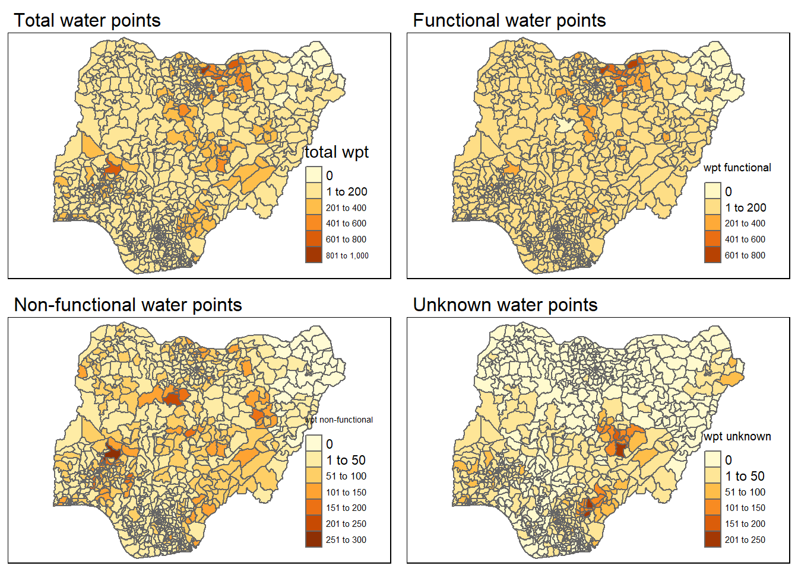
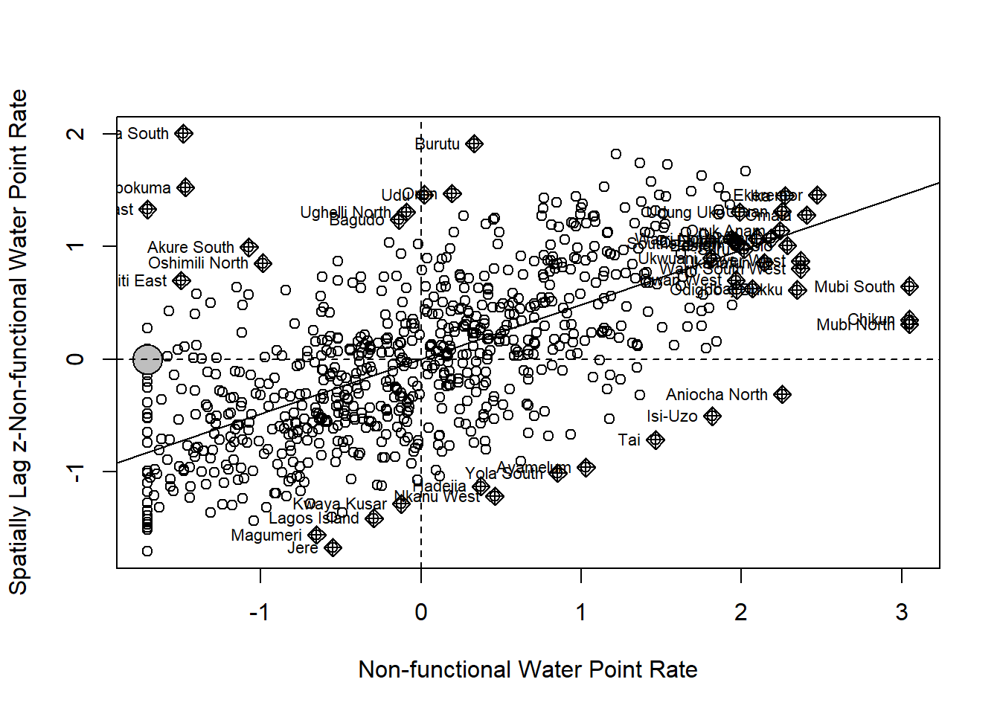

pacman::p_load(sf, tidyverse, tmap, spdep, funModeling)Take Home Exercise 1
1 Overview
1.1 Background
Water is an important resource and access to clean water is critical to human health. However, over 40% of the global population does not have access to sufficient clean water. By 2025, 1.8 billion people will be living in countries or regions with absolute water scarcity, according to UN-Water. The lack of water poses a major threat to several sectors, including food security - Agriculture uses about 70% of the world’s accessible freshwater.
Developing countries are most affected by water shortages and poor water quality. Up to 80% of illnesses in the developing world are linked to inadequate water and sanitation. Despite technological advancement, providing clean water to the rural community is still a major development issues in many countries globally, especially countries in the Africa continent.
1.2 Problem statement
Through the use of appropriate global and local measures of spatial association techniques, we aim to reveal spatial patterns of non-functional water points in Nigeria.
1.3 Nigeria’s Geopolitical Zones
Nigeria is divided into 6 geopolitical zones, which are namely:
North West
North East
North Central
South West
South East
South South
2 Import Packages and Data Sets
2.1 Packages
p_load function of pacman package is used to install and load the required packages into R environment.
The following packages are used:
sf: Support for simple features, a standardised way to encode spatial vector data. Used for reading and writing data, and for projection conversions and datum transformations.
tidyverse: Collection of packages that are commonly used for data analysis e.g. ggplot2, dplyr, tidyr.
tmap: Used for drawing of thematic maps.
spdep: Collection of functions to create spatial weights matrix objects for spatial data analysis, and a collection of tests for spatial ‘autocorrelation’ such as Moran’s I and Geary’s C.
funModeling: Used for quick exploratory data analysis
2.2 Data sets
Two data sets are used:
WPdx+ data set from WPdx Global Data Repositories which provides data on functional and non-functional water points in Nigeria
Nigeria Level-2 Administrative Boundary (also known as Local Government Area) polygon features GIS data from geoBoundaries.
Importing WPdx+ data set
st_read() function of pacman package is used to import geo_export shapefile into R environment, and save the imported geospatial data into simple feature data table. Note that filter() of dpylr package is also used to extract water point records of Nigeria.
Note 1: The original data will be transformed and eventually saved as a smaller file.
Note 2: Avoid performing transformation e.g.
st_transform()as we will be usingst_intersect()of sf package in the later stage of the geoprocessing, and this function only works correctly if the geospatial data is in geographic coordinate system i.e. WGS84.
wp <- st_read(dsn = "geodata",
layer = "geo_export",
crs = 4326) %>%
filter(clean_coun == "Nigeria")Next, write_rds() of readr package is used to save the extracted sf data table (i.e. wp) into an output file in rds data format. The output file is called wp_nga.rds and it is saved in geodata sub-folder.
wp_nga <- write_rds(wp, "geodata/wp_nga.rds")Importing Nigeria’s level-2 administrative boundary
st_read() of sf package is used to import geoBoundaries-NGA-ADM2 shapefile into R environment and save the imported geospatial data into simple feature data table.
nga_LGA <- st_read(dsn = "geodata",
layer = "geoBoundaries-NGA-ADM2",
crs = 4326)3 Data Wrangling
3.1 Exploratory data analysis
freq() of funModeling package is used to display the distribution of status_cle field in wp_nga.
freq(data = wp_nga,
input = "status_cle")
From the above graph, we can see that there are more than 10,000 records with N/A value for status_cle.
replace_na of tidyr package and mutate of dplyr package are used to replace the missing values to “Unknown”.
wp_nga <- read_rds("geodata/wp_nga.rds") %>%
mutate(status_cle = replace_na(status_cle, "Unknown"))Plot the frequency graph again to check that there are no more N/A values.
freq(data = wp_nga,
input = "status_cle")
3.2 Extracting water point data
In the code chunks below, filter() of dplyr package is used to select functional and non-functional water points, and water points with Unknown class.
Extracting functional water point
wpt_functional <- (wp_nga %>%
filter(status_cle %in%
c("Functional",
"Functional but not in use",
"Functional but needs repair")
)
)Extracting non-functional water point
wpt_nonfunctional <- (wp_nga %>%
filter(status_cle %in%
c("Abandoned",
"Abandoned/Decommissioned",
"Non functional due to dry season",
"Non-Functional due to dry season",
"Non-Functional")
)
)Extracting water point with Unknown class
wpt_unknown <- (wp_nga %>%
filter(status_cle == "Unknown")
)3.3 Performing point-in-polygon count
st_intersects() of sf package is used to identify the water points located inside each LGA level, and lengths() of Base R is used to calculate the number of water points inside each LGA level.
nga_wp <- nga_LGA %>%
mutate(`total wpt` = lengths(st_intersects(nga_LGA, wp_nga))) %>%
mutate(`wpt functional` = lengths(st_intersects(nga_LGA, wpt_functional))) %>%
mutate(`wpt non-functional` = lengths(st_intersects(nga_LGA, wpt_nonfunctional))) %>%
mutate(`wpt unknown` = lengths(st_intersects(nga_LGA, wpt_unknown)))3.4 Computing percentage of functional and non-functional water point at LGA level
mutate() of dplyr package is used to compute the proportion of functional and non-functional water at LGA level.
nga_wp <- nga_wp %>%
mutate(pct_functional = `wpt functional`/`total wpt`) %>%
mutate(pct_nonfunctional = `wpt non-functional`/`total wpt`)
nga_wp$pct_functional[is.nan(nga_wp$pct_functional)]<- 0
nga_wp$pct_nonfunctional[is.nan(nga_wp$pct_nonfunctional)]<- 03.5 Transforming the projected coordinate system
st_transform() of sf package is used to transform the to one of Nigeria’s Projected Coordinate Systems (EPSG: 26391, 26392, and 26303).
nga_wp <- st_transform(nga_wp,
crs = 26392)3.6 Saving the Analytical Data Table
Lastly, write_rds() of readr package is used again to save the nga_wp to nga_wp.rds, which is saved in geodata sub-folder.
write_rds(nga_wp, "geodata/nga_wp.rds")4 Import Cleaned Data
read_rds() of readr package is used to read the saved nga_wp.rds in the geodata sub-folder.
nga_wp <- read_rds("geodata/nga_wp.rds")5 Visualise Spatial Distribution of Water Points
qtm() of tmap package is used visualise the spatial distribution of water points by LGA level by using appropriate thematic mapping technique.
5.1 Visualising spatial distribution of water points count by LGA level
total <- qtm(nga_wp, "total wpt")+
tm_layout(main.title = "Total water points",
main.title.size = 1,
legend.width=0.2)
wp_functional <- qtm(nga_wp, "wpt functional")+
tm_layout(main.title = "Functional water points",
main.title.size = 1,
legend.width=0.2)
wp_nonfunctional <- qtm(nga_wp, "wpt non-functional")+
tm_layout(main.title = "Non-functional water points",
main.title.size = 1,
legend.width=0.2)
unknown <- qtm(nga_wp, "wpt unknown")+
tm_layout(main.title = "Unknown water points",
main.title.size = 1,
legend.width=0.2)
tmap_arrange(total, wp_functional, wp_nonfunctional, unknown, ncol=2)
There are no obvious trends when we plot the spatial distribution of water point count. Instead, let’s plot the spatial distribution of the water point rate below.
5.2 Visualising spatial distribution of water point rate by LGA level
pct_wp_functional <- qtm(nga_wp, "pct_functional")+
tm_layout(main.title = "Percentage of functional water points",
main.title.size = 1)+
tm_text("shapeName",
remove.overlap = TRUE,
size = 0.6)
pct_wp_nonfunctional <- qtm(nga_wp, "pct_nonfunctional")+
tm_layout(main.title = "Percentage of non-functional water points",
main.title.size = 1)+
tm_text("shapeName",
remove.overlap = TRUE,
size = 0.6)
tmap_arrange(pct_wp_functional, pct_wp_nonfunctional, asp=1, ncol=2)From the above plots, we can observe that the north west and lower part of the north east zone generally have a higher proportion of functional water points (darker shade of red on the left graph), while the north central and southern zones has a relatively higher proportion of non-functional water points (slightly darker shade of red on the right graph).
6 Cluster and Outlier Analysis
6.1 Computing contiguity spatial weights
poly2nb() of spdep package is used to compute contiguity weight matrices for the study area. This function builds a neighbours list based on regions with contiguous boundaries.
In the code chunk below, we find the Queen contiguity weight matrix as we set the “queen” argument as TRUE, which will return a list of first order neighbours using the Queen criteria.
wm_q <- poly2nb(nga_wp,
queen=TRUE)
summary(wm_q)Neighbour list object:
Number of regions: 774
Number of nonzero links: 4440
Percentage nonzero weights: 0.7411414
Average number of links: 5.736434
1 region with no links:
86
Link number distribution:
0 1 2 3 4 5 6 7 8 9 10 11 12 14
1 2 14 57 125 182 140 122 72 41 12 4 1 1
2 least connected regions:
138 560 with 1 link
1 most connected region:
508 with 14 links6.2 Computing row-standardised weights matrix
Next, we assign equal weights to each neighboring polygon (style=“W”) in nb2listw().
rswm_q <- nb2listw(wm_q,
style="W",
zero.policy = TRUE)
print(rswm_q, zero.policy = TRUE)Characteristics of weights list object:
Neighbour list object:
Number of regions: 774
Number of nonzero links: 4440
Percentage nonzero weights: 0.7411414
Average number of links: 5.736434
1 region with no links:
86
Weights style: W
Weights constants summary:
n nn S0 S1 S2
W 773 597529 773 285.0658 3198.4146.3 Local Moran’s I
localmoran() function of spdep package is used to compute local Moran’s I. It computes Ii values, given a set of zi values and a listw object providing neighbour weighting information for the polygon associated with the zi values.
We use the pct_nonfunctional to compute local Moran’s I.
localmoran() function returns a matrix of values whose columns are:
Ii: the local Moran’s I statistics
E.Ii: the expectation of local moran statistic under the randomisation hypothesis
Var.Ii: the variance of local moran statistic under the randomisation hypothesis
Z.Ii:the standard deviate of local moran statistic
Pr(): the p-value of local moran statistic
fips <- order(nga_wp$shapeName)
localMI <- localmoran(nga_wp$pct_nonfunctional, rswm_q, zero.policy = TRUE)
head(localMI) Ii E.Ii Var.Ii Z.Ii Pr(z != E(Ii))
1 0.7104808 -0.0008481017 0.1633313 1.7600935 0.078391961
2 0.4787122 -0.0005236472 0.1346804 1.3058614 0.191599708
3 2.9220515 -0.0037801442 0.9690735 2.9721518 0.002957204
4 0.2666687 -0.0016485516 0.1805678 0.6314347 0.527756347
5 1.1001242 -0.0007647464 0.1176793 3.2091756 0.001331162
6 0.5273909 -0.0009383859 0.1028556 1.6473678 0.099482464printCoefmat() is used to list the content of the local Moran matrix in the code chunk below.
nga_wp$shapeName <- with(nga_wp, make.unique(as.character(shapeName)))
printCoefmat(data.frame(
localMI[fips,],
row.names=nga_wp$shapeName[fips]),
check.names=FALSE) Ii E.Ii Var.Ii Z.Ii
Aba North 7.1048e-01 -8.4810e-04 1.6333e-01 1.7601e+00
Aba South 4.7871e-01 -5.2365e-04 1.3468e-01 1.3059e+00
Abadam 2.9221e+00 -3.7801e-03 9.6907e-01 2.9722e+00
Abaji 2.6667e-01 -1.6486e-03 1.8057e-01 6.3143e-01
Abak 1.1001e+00 -7.6475e-04 1.1768e-01 3.2092e+00
Abakaliki 5.2739e-01 -9.3839e-04 1.0286e-01 1.6474e+00
Abeokuta North -2.0155e-01 -1.9660e-04 2.5192e-02 -1.2686e+00
Abeokuta South 1.2084e-01 -1.9665e-04 3.7896e-02 6.2178e-01
Abi -4.0565e-02 -6.9312e-05 1.0673e-02 -3.9198e-01
Aboh-Mbaise 9.1734e-03 -3.5249e-05 3.8671e-03 1.4808e-01
Abua/Odual 1.3806e-03 -1.9671e-05 2.1581e-03 3.0143e-02
Abuja Municipal 1.0191e-01 -9.6479e-04 9.2408e-02 3.3842e-01
Adavi 7.4353e-01 -1.1287e-03 1.7363e-01 1.7871e+00
Ado -1.9818e-02 -1.7819e-04 1.7081e-02 -1.5028e-01
Ado-Odo/Ota -1.0713e-01 -1.0647e-04 1.1680e-02 -9.9033e-01
Ado Ekiti -3.7915e-02 -1.5482e-04 2.3839e-02 -2.4456e-01
Afijio 1.6042e-02 -3.0426e-06 7.8297e-04 5.7342e-01
Afikpo North 9.5682e-03 -8.7733e-05 1.3510e-02 8.3075e-02
Afikpo South 5.0871e-02 -5.8026e-04 7.4325e-02 1.8872e-01
Agaie -6.6202e-02 -5.3678e-04 8.2618e-02 -2.2845e-01
Agatu 1.9248e+00 -2.7681e-03 4.2510e-01 2.9564e+00
Agege 1.0894e+00 -2.5073e-03 6.4360e-01 1.3610e+00
Aguata 7.6625e-01 -1.1875e-03 1.8266e-01 1.7957e+00
Agwara 1.6960e-01 -9.4099e-05 1.8136e-02 1.2601e+00
Ahiazu-Mbaise 7.4044e-02 -1.3313e-04 1.4604e-02 6.1381e-01
Ahoada East -5.4543e-01 -8.1752e-04 1.5745e-01 -1.3725e+00
Ahoada West -4.6771e-01 -3.7801e-03 5.7993e-01 -6.0920e-01
Aiyedade -4.4750e-03 -3.6195e-05 3.9709e-03 -7.0440e-02
Aiyedire 3.9482e-02 -3.2938e-05 3.6136e-03 6.5735e-01
Aiyekire (Gbonyin) 9.9201e-03 -3.1751e-06 3.0440e-04 5.6876e-01
Ajaokuta 8.9227e-01 -1.6977e-03 2.1721e-01 1.9181e+00
Ajeromi-Ifelodun 1.3779e+00 -1.6072e-03 4.1292e-01 2.1467e+00
Ajingi 1.0218e+00 -9.0811e-04 1.1628e-01 2.9992e+00
Akamkpa 4.4244e-02 -8.2188e-06 9.0170e-04 1.4737e+00
Akinyele 3.3688e-02 -9.9884e-06 1.0958e-03 1.0180e+00
Akko 7.5012e-01 -1.3593e-03 1.3014e-01 2.0831e+00
Akoko-Edo 7.4851e-01 -8.7671e-04 6.0836e-02 3.0383e+00
Akoko North East 5.3052e-01 -8.4037e-04 9.2121e-02 1.7507e+00
Akoko North West -9.1353e-03 -1.6107e-03 3.0995e-01 -1.3516e-02
Akoko South East 1.5725e+00 -3.0038e-03 5.7723e-01 2.0737e+00
Akoko South West 7.4897e-01 -9.9569e-04 1.5318e-01 1.9162e+00
Akpabuyo 4.3627e-01 -8.2761e-04 1.5939e-01 1.0948e+00
Akuku Toru -7.4085e-02 -1.5838e-04 4.0750e-02 -3.6622e-01
Akure North 1.6263e-01 -1.3567e-03 1.7364e-01 3.9352e-01
Akure South -1.0666e+00 -1.4949e-03 3.8411e-01 -1.7185e+00
Akwanga -2.3639e-01 -4.2431e-04 8.1750e-02 -8.2527e-01
Albasu 3.0822e-01 -9.8120e-05 1.5109e-02 2.5083e+00
Aleiro 7.6914e-02 -1.4076e-04 2.7127e-02 4.6785e-01
Alimosho 4.7725e-01 -5.2546e-04 5.7619e-02 1.9904e+00
Alkaleri -3.6657e-02 -1.3378e-04 1.2824e-02 -3.2252e-01
Amuwo-Odofin 7.9332e-01 -7.4280e-04 7.1161e-02 2.9767e+00
Anambra East 2.1574e-01 -4.7513e-04 6.0866e-02 8.7638e-01
Anambra West -2.9204e-02 -5.7829e-05 5.5439e-03 -3.9145e-01
Anaocha 7.3091e-01 -8.2145e-04 9.0049e-02 2.4384e+00
Andoni -4.3655e-01 -2.4262e-03 6.2283e-01 -5.5008e-01
Aninri 8.2526e-01 -3.7801e-03 5.7993e-01 1.0886e+00
Aniocha North -7.0709e-01 -6.5831e-03 1.2605e+00 -6.2393e-01
Aniocha South -1.4809e-01 -7.7855e-05 8.5409e-03 -1.6016e+00
Anka 8.7867e-02 -4.1651e-04 6.4115e-02 3.4866e-01
Ankpa 2.7506e+00 -4.6866e-03 5.1177e-01 3.8515e+00
Apa 2.2225e+00 -1.9216e-03 2.9535e-01 4.0930e+00
Apapa 1.8806e+00 -3.7801e-03 4.8265e-01 2.7123e+00
Ardo-Kola -1.2718e-02 -5.0964e-05 6.5315e-03 -1.5674e-01
Arewa-Dandi 2.8243e-03 -1.6529e-08 1.5847e-06 2.2436e+00
Argungu 7.6334e-02 -3.0647e-04 4.7181e-02 3.5284e-01
Arochukwu -2.3885e-01 -1.8395e-04 2.3572e-02 -1.5545e+00
Asa -3.8317e-02 -9.3275e-05 1.0232e-02 -3.7787e-01
Asari-Toru 3.2181e-01 -1.2955e-03 5.0007e-01 4.5690e-01
Askira/Uba 4.4476e-01 -7.9553e-04 6.7653e-02 1.7130e+00
Atakumosa East 1.1495e-01 -8.3232e-05 1.2816e-02 1.0161e+00
Atakumosa West 9.6189e-02 -1.0352e-04 8.8096e-03 1.0259e+00
Atiba 1.5449e-01 -2.9478e-04 2.8253e-02 9.2088e-01
Atigbo -2.4407e-01 -2.7055e-04 3.4665e-02 -1.3094e+00
Augie 2.3962e-01 -2.2947e-04 2.9403e-02 1.3988e+00
Auyo 1.3500e+00 -1.9577e-03 2.1436e-01 2.9201e+00
Awe 9.8490e-02 -1.4706e-04 1.4097e-02 8.3075e-01
Awgu 1.8010e-01 -7.7855e-05 9.9774e-03 1.8039e+00
Awka North 2.3937e-01 -3.7801e-03 4.1316e-01 3.7829e-01
Awka South 3.9680e-01 -5.2788e-04 8.1250e-02 1.3939e+00
Ayamelum -9.9360e-01 -1.3730e-03 2.1115e-01 -2.1593e+00
Babura 3.9697e-01 -1.1764e-03 1.8095e-01 9.3597e-01
Badagry 9.7761e-02 -4.3383e-04 1.1159e-01 2.9395e-01
Bade 8.0832e-01 -7.7864e-04 1.4997e-01 2.0893e+00
Bagudo -1.7151e-01 -2.4891e-05 3.8331e-03 -2.7698e+00
Bagwai 8.3615e-01 -1.0332e-03 1.1324e-01 2.4878e+00
Bakassi 0.0000e+00 0.0000e+00 0.0000e+00 NaN
Bakori 6.9808e-01 -2.2337e-03 2.8564e-01 1.3103e+00
Bakura 1.7476e-01 -2.1274e-03 2.7208e-01 3.3913e-01
Balanga -9.2064e-02 -1.9820e-04 2.1741e-02 -6.2304e-01
Bali 3.3571e-02 -1.1950e-04 1.0170e-02 3.3409e-01
Bama 2.9221e+00 -3.7801e-03 7.2586e-01 3.4342e+00
Barikin Ladi 2.0994e-03 -3.4270e-06 4.3921e-04 1.0034e-01
Baruten 2.8872e-02 -1.4726e-04 1.8870e-02 2.1125e-01
Bassa 1.0837e+00 -1.5233e-03 1.4582e-01 2.8419e+00
Bassa.1 2.1007e-01 -3.4159e-04 4.3765e-02 1.0058e+00
Batagarawa -1.9967e-02 -2.6474e-05 2.9044e-03 -3.7000e-01
Batsari 4.0673e-02 -3.4356e-05 5.2906e-03 5.5965e-01
Bauchi 3.8567e-01 -6.8383e-04 1.0524e-01 1.1910e+00
Baure -1.0961e-01 -2.2892e-05 3.5253e-03 -1.8457e+00
Bayo 1.3919e-01 -1.3378e-04 2.0599e-02 9.7078e-01
Bebeji 5.6777e-01 -1.8232e-03 2.8026e-01 1.0759e+00
Bekwara -6.3674e-02 -1.4381e-04 2.2143e-02 -4.2694e-01
Bende -9.6268e-02 -3.4958e-04 3.3504e-02 -5.2403e-01
Biase 1.2532e-01 -2.0421e-04 1.9574e-02 8.9722e-01
Bichi 2.7681e-01 -7.7855e-05 9.9774e-03 2.7720e+00
Bida -2.6337e-01 -1.6143e-03 6.2293e-01 -3.3164e-01
Billiri 1.4430e-01 -8.9847e-04 1.7302e-01 3.4908e-01
Bindawa 4.4692e-01 -7.8468e-04 1.0049e-01 1.4123e+00
Binji 5.9725e-01 -2.1292e-03 2.7230e-01 1.1486e+00
Biriniwa 1.0800e+00 -1.0622e-03 1.3599e-01 2.9315e+00
Birni Kudu 1.1793e+00 -1.8649e-03 1.7846e-01 2.7959e+00
Birnin-Gwari 1.0523e+00 -3.4129e-03 2.6018e-01 2.0698e+00
Birnin Kebbi -6.1373e-01 -1.4949e-03 1.9131e-01 -1.3998e+00
Birnin Magaji 3.8265e-01 -5.9689e-04 7.6454e-02 1.3861e+00
Biu 1.2705e+00 -3.7801e-03 3.6104e-01 2.1208e+00
Bodinga 3.3513e-01 -4.2419e-04 6.5297e-02 1.3131e+00
Bogoro 5.1520e-01 -6.5526e-04 1.6851e-01 1.2566e+00
Boki -1.7271e-03 -8.5335e-08 1.3141e-05 -4.7639e-01
Bokkos -3.6040e-02 -3.4958e-04 4.4789e-02 -1.6864e-01
Boluwaduro 4.6738e-02 -3.8171e-05 7.3571e-03 5.4535e-01
Bomadi 2.8292e+00 -4.4722e-03 6.8563e-01 3.4223e+00
Bonny 3.4281e-01 -3.7801e-03 4.8265e-01 4.9888e-01
Borgu -2.8043e-01 -4.7814e-04 4.0675e-02 -1.3881e+00
Boripe 1.8050e-01 -4.2867e-04 5.4917e-02 7.7207e-01
Bosso -1.6959e-01 -5.8400e-04 7.4804e-02 -6.1795e-01
Brass 2.8480e+00 -3.9671e-03 1.5272e+00 2.3078e+00
Buji 8.0392e-01 -1.6124e-03 2.4791e-01 1.6178e+00
Bukkuyum -1.1565e-02 -1.9441e-04 2.9933e-02 -6.5722e-02
Bungudu 9.8178e-02 -5.9215e-05 7.5888e-03 1.1277e+00
Bunkure 3.2673e-01 -4.4333e-04 4.8617e-02 1.4838e+00
Bunza 1.2468e+00 -1.3848e-03 2.1296e-01 2.7048e+00
Bursari 9.0054e-01 -8.8354e-04 8.4633e-02 3.0986e+00
Buruku 2.0770e-02 -4.3366e-05 5.5578e-03 2.7918e-01
Burutu 6.3132e-01 -1.4076e-04 2.7127e-02 3.8340e+00
Bwari 2.1399e-01 -5.1249e-04 9.8731e-02 6.8266e-01
Calabar-Municipal -2.0755e-01 -5.2100e-05 1.3406e-02 -1.7920e+00
Calabar South 5.9487e-01 -2.6060e-03 5.0100e-01 8.4411e-01
Chanchaga -6.2759e-01 -1.1287e-03 8.7265e-01 -6.7062e-01
Charanchi 1.5392e-01 -3.5775e-04 4.5835e-02 7.2064e-01
Chibok 7.7879e-01 -3.9975e-04 1.0283e-01 2.4299e+00
Chikun 1.0655e+00 -1.2025e-02 1.1390e+00 1.0096e+00
Dala -1.2266e-01 -1.8028e-05 3.4748e-03 -2.0805e+00
Damaturu 1.4926e+00 -2.3346e-03 3.5869e-01 2.4961e+00
Damban -2.2847e-01 -2.0163e-03 2.5790e-01 -4.4591e-01
Dambatta 2.3295e-02 -6.1144e-07 9.4161e-05 2.4007e+00
Damboa 2.4779e+00 -3.7801e-03 3.6104e-01 4.1301e+00
Dan Musa 8.2153e-01 -1.8288e-03 2.0027e-01 1.8398e+00
Dandi 1.1931e+00 -3.4616e-03 6.6492e-01 1.4674e+00
Dandume 2.7987e-02 -6.2985e-06 1.2140e-03 8.0341e-01
Dange-Shuni -1.7603e-02 -2.7000e-05 2.9622e-03 -3.2294e-01
Danja -4.5872e-02 -2.1259e-04 2.7241e-02 -2.7664e-01
Darazo 1.1172e-01 -5.8026e-04 6.3624e-02 4.4520e-01
Dass 1.1122e+00 -2.3903e-03 9.2163e-01 1.1610e+00
Daura 2.8260e-01 -4.4121e-03 1.1304e+00 2.6996e-01
Dawakin Kudu 1.7281e-01 -1.0781e-04 1.3816e-02 1.4711e+00
Dawakin Tofa 1.7771e+00 -2.6945e-03 3.4441e-01 3.0327e+00
Degema 3.7854e-01 -3.4958e-04 3.3504e-02 2.0700e+00
Dekina 2.6563e+00 -3.0642e-03 5.8881e-01 3.4657e+00
Demsa 1.9157e-01 -4.8349e-04 5.3019e-02 8.3410e-01
Dikwa 2.9221e+00 -3.7801e-03 4.8265e-01 4.2115e+00
Doguwa -1.3474e-01 -7.2763e-05 9.3250e-03 -1.3946e+00
Doma 1.1473e-01 -2.1534e-05 1.8327e-03 2.6804e+00
Donga 7.7116e-02 -2.3409e-04 2.2438e-02 5.1638e-01
Dukku 1.4433e+00 -7.1389e-03 7.7763e-01 1.6448e+00
Dunukofia 1.2670e-02 -3.9951e-07 6.1524e-05 1.6154e+00
Dutse 1.6800e+00 -3.5118e-03 3.3550e-01 2.9064e+00
Dutsi -2.5258e-02 -1.3854e-05 1.5200e-03 -6.4750e-01
Dutsin-Ma 4.4227e-01 -5.9410e-04 7.6098e-02 1.6054e+00
Eastern Obolo 2.3066e+00 -6.7695e-03 1.0354e+00 2.2735e+00
Ebonyi 8.2166e-01 -1.2357e-03 1.5818e-01 2.0690e+00
Edati 1.6097e-02 -2.2456e-04 8.6771e-02 5.5407e-02
Ede North 1.1448e-01 -4.7814e-04 1.2298e-01 3.2782e-01
Ede South -3.1977e-02 -2.4859e-04 2.1152e-02 -2.1816e-01
Edu 3.4713e-01 -6.4646e-04 9.9490e-02 1.1026e+00
Efon 1.6921e-01 -6.7549e-04 1.3011e-01 4.7099e-01
Egbado North -7.7998e-02 -1.6990e-05 2.6164e-03 -1.5245e+00
Egbado South 3.9709e-01 -2.5793e-03 3.9618e-01 6.3497e-01
Egbeda -1.3147e-02 -2.2340e-06 3.4403e-04 -7.0871e-01
Egbedore -1.3817e-02 -7.6400e-05 7.3241e-03 -1.6056e-01
Egor 3.8061e-01 -7.4965e-04 1.9276e-01 8.6860e-01
Ehime-Mbano 2.7616e-01 -4.9586e-04 7.6323e-02 1.0014e+00
Ejigbo 7.6811e-02 -2.1455e-04 2.3534e-02 5.0210e-01
Ekeremor 3.6037e+00 -7.9060e-03 1.5118e+00 2.9373e+00
Eket 5.7575e-01 -2.7351e-04 5.2704e-02 2.5091e+00
Ekiti 8.4378e-01 -1.6837e-03 2.1543e-01 1.8215e+00
Ekiti East -1.0463e+00 -2.9027e-03 4.4571e-01 -1.5628e+00
Ekiti South West 2.3209e-01 -4.3762e-04 4.7991e-02 1.0614e+00
Ekiti West -1.1483e-02 -2.2793e-06 2.1852e-04 -7.7661e-01
Ekwusigo 1.1564e+00 -2.2298e-03 3.4262e-01 1.9794e+00
Eleme 1.1154e+00 -3.7801e-03 4.8265e-01 1.6110e+00
Emohua 5.3008e-02 -1.9671e-05 1.8859e-03 1.2211e+00
Emure -6.0284e-02 -1.9851e-04 3.0565e-02 -3.4368e-01
Enugu East 5.2596e-01 -1.0061e-03 1.5478e-01 1.3395e+00
Enugu North 1.4384e+00 -2.9541e-03 4.5359e-01 2.1402e+00
Enugu South 1.1227e+00 -2.7537e-03 7.0665e-01 1.3388e+00
Epe -1.0862e-01 -7.7320e-05 7.4123e-03 -1.2607e+00
Esan Central 1.2244e+00 -2.0686e-03 3.9789e-01 1.9444e+00
Esan North East 1.3278e+00 -1.5358e-03 2.3615e-01 2.7355e+00
Esan South East 1.3009e+00 -3.6920e-03 3.1306e-01 2.3317e+00
Esan West 8.2212e-01 -8.4810e-04 1.0860e-01 2.4972e+00
Ese-Odo 1.6062e+00 -2.3027e-03 3.5380e-01 2.7043e+00
Esit - Eket 2.3846e+00 -4.4722e-03 5.7061e-01 3.1627e+00
Essien Udim 2.1749e+00 -2.8725e-03 3.1425e-01 3.8849e+00
Etche -2.7135e-01 -3.8356e-04 4.2066e-02 -1.3212e+00
Ethiope East 1.1113e+00 -2.2492e-03 4.3256e-01 1.6932e+00
Ethiope West 1.8342e+00 -3.0134e-03 4.6266e-01 2.7010e+00
Eti-Osa 8.9467e-01 -3.7801e-03 5.7993e-01 1.1798e+00
Etim Ekpo 2.3810e+00 -2.4262e-03 3.1020e-01 4.2793e+00
Etinan 2.0481e+00 -4.9761e-03 7.6250e-01 2.3512e+00
Etsako Central 1.3102e+00 -1.7569e-03 2.7009e-01 2.5244e+00
Etsako East 9.5134e-01 -1.0393e-03 8.8362e-02 3.2039e+00
Etsako West -1.1503e-01 -1.9671e-05 2.1581e-03 -2.4756e+00
Etung 9.4604e-02 -6.5764e-04 1.6912e-01 2.3164e-01
Ewekoro 4.3386e-01 -9.3526e-04 1.1976e-01 1.2564e+00
Ezeagu 5.4909e-01 -7.7983e-04 1.2000e-01 1.5873e+00
Ezinihitte -3.0053e-02 -1.1673e-05 1.7976e-03 -7.0857e-01
Ezza North 5.0244e-01 -7.6344e-04 9.7771e-02 1.6093e+00
Ezza South 5.3312e-01 -8.2831e-04 1.2745e-01 1.4956e+00
Fagge 6.9386e-01 -2.5620e-03 3.9354e-01 1.1101e+00
Fakai -5.1400e-01 -9.2209e-04 1.0107e-01 -1.6139e+00
Faskari -1.7603e-02 -4.9701e-04 4.7626e-02 -7.8382e-02
Fika -4.7735e-02 -6.4784e-04 5.5102e-02 -2.0059e-01
Fufore 4.3357e-01 -3.7801e-03 4.8265e-01 6.2953e-01
Funakaye 9.7216e-01 -1.4823e-03 2.2793e-01 2.0394e+00
Fune 4.6535e-01 -2.4599e-04 2.3578e-02 3.0322e+00
Funtua 6.9002e-02 -3.9679e-04 6.1081e-02 2.8080e-01
Gabasawa 1.4210e+00 -3.2500e-03 4.1518e-01 2.2105e+00
Gada -1.6103e-02 -3.2218e-07 6.2100e-05 -2.0434e+00
Gagarawa 1.1052e+00 -2.3806e-03 3.0438e-01 2.0076e+00
Gamawa 4.3937e-02 -2.2022e-05 2.8224e-03 8.2744e-01
Ganjuwa 1.5168e-01 -1.4624e-03 1.4000e-01 4.0928e-01
Ganye 3.1356e-03 -1.2990e-07 2.5038e-05 6.2667e-01
Garki 8.8292e-01 -7.3420e-04 7.0338e-02 3.3318e+00
Garko 4.6706e-01 -1.6265e-03 1.7816e-01 1.1104e+00
Garum Mallam 3.2873e-01 -2.6682e-04 4.1079e-02 1.6232e+00
Gashaka 7.2154e-03 -3.5249e-05 6.7939e-03 8.7966e-02
Gassol 3.7619e-03 -3.2292e-05 4.1386e-03 5.8978e-02
Gaya 1.3281e+00 -3.4617e-03 6.6493e-01 1.6330e+00
Gbako -6.6000e-02 -1.1851e-04 1.8248e-02 -4.8771e-01
Gboko 6.3051e-03 -4.1375e-06 6.3716e-04 2.4995e-01
Geidam 2.1810e+00 -3.7801e-03 4.8265e-01 3.1447e+00
Gezawa 1.4122e-01 -3.4179e-05 5.2634e-03 1.9470e+00
Giade 1.8010e-01 -1.3679e-04 2.6363e-02 1.1101e+00
Girei 6.7684e-01 -1.4949e-03 2.2987e-01 1.4148e+00
Giwa 6.7092e-01 -9.0352e-04 7.6828e-02 2.4238e+00
Gokana -2.7733e-01 -5.8026e-04 1.1178e-01 -8.2777e-01
Gombe 1.1414e+00 -1.1471e-03 4.4283e-01 1.7170e+00
Gombi 1.3297e-02 -3.9951e-07 5.1203e-05 1.8583e+00
Goronyo -1.0035e-01 -2.3559e-03 3.0123e-01 -1.7855e-01
Gubio 2.5606e+00 -3.7801e-03 5.7993e-01 3.3673e+00
Gudu 8.9840e-01 -1.3634e-03 3.5037e-01 1.5201e+00
Gujba 1.6961e+00 -3.7801e-03 4.1316e-01 2.6446e+00
Gulani -1.2152e-01 -5.8026e-04 6.3624e-02 -4.7948e-01
Guma 2.2477e-01 -7.6981e-04 6.5467e-02 8.8150e-01
Gumel -9.0867e-02 -1.0957e-05 2.8195e-03 -1.7111e+00
Gummi -3.7968e-02 -6.1482e-05 6.7450e-03 -4.6155e-01
Gurara -7.3498e-02 -1.8169e-04 1.9930e-02 -5.1933e-01
Guri 1.3940e+00 -2.7043e-03 2.9589e-01 2.5677e+00
Gusau 2.6351e-02 -7.0358e-06 6.7454e-04 1.0149e+00
Guyuk -4.3901e-01 -5.8026e-04 1.1178e-01 -1.3114e+00
Guzamala 2.9221e+00 -3.7801e-03 4.8265e-01 4.2115e+00
Gwadabawa 2.6569e-01 -2.2744e-04 2.9143e-02 1.5577e+00
Gwagwalada 1.3283e-01 -1.5589e-04 1.9977e-02 9.4091e-01
Gwale 5.5269e-01 -8.8439e-04 1.7031e-01 1.3414e+00
Gwandu 8.5414e-02 -3.5530e-04 6.8460e-02 3.2780e-01
Gwaram 7.2778e-01 -1.7419e-03 1.6671e-01 1.7867e+00
Gwarzo 6.7150e-01 -1.6988e-03 2.1735e-01 1.4440e+00
Gwer East 2.2928e-01 -1.9769e-03 1.6792e-01 5.6435e-01
Gwer West 2.0642e+00 -7.2609e-03 9.2384e-01 2.1551e+00
Gwiwa 1.0453e-01 -8.0172e-05 1.0274e-02 1.0321e+00
Gwoza 2.9221e+00 -3.7801e-03 7.2586e-01 3.4342e+00
Hadejia -4.2115e-01 -1.7935e-04 4.6144e-02 -1.9597e+00
Hawul 1.2267e+00 -2.5793e-03 3.9618e-01 1.9530e+00
Hong -3.6270e-01 -3.4958e-04 4.4789e-02 -1.7122e+00
Ibadan North 1.3390e-01 -1.6596e-03 2.5515e-01 2.6836e-01
Ibadan North East 5.6454e-03 -7.0845e-07 9.0798e-05 5.9254e-01
Ibadan North West 2.0797e-01 -1.5139e-04 2.3310e-02 1.3632e+00
Ibadan South East 1.5142e-01 -1.0863e-03 1.6711e-01 3.7308e-01
Ibadan South West 3.3535e-01 -4.6209e-04 8.9025e-02 1.1255e+00
Ibaji 1.2892e+00 -5.5390e-03 6.0433e-01 1.6656e+00
Ibarapa Central 3.8673e-02 -1.7325e-05 2.6679e-03 7.4906e-01
Ibarapa East 3.5113e-02 -7.6031e-06 9.7444e-04 1.1251e+00
Ibarapa North 8.1118e-02 -1.9671e-05 3.0293e-03 1.4742e+00
Ibeju/Lekki 7.2852e-02 -1.2798e-05 4.9462e-03 1.0360e+00
Ibeno 1.7517e+00 -1.6977e-03 2.6099e-01 3.4321e+00
Ibesikpo Asutan 1.1779e+00 -9.2581e-04 1.4244e-01 3.1234e+00
Ibi -2.5905e-02 -1.2978e-04 1.4237e-02 -2.1602e-01
Ibiono Ibom 1.1050e+00 -1.8101e-03 2.3157e-01 2.3000e+00
Idah 1.7130e+00 -2.1017e-03 5.3969e-01 2.3346e+00
Idanre 6.2808e-01 -8.4247e-04 7.1641e-02 2.3497e+00
Ideato North 3.1728e-01 -1.3715e-03 1.3131e-01 8.7936e-01
Ideato South 7.8427e-02 -2.8348e-04 5.4625e-02 3.3677e-01
Idemili North 8.1600e-01 -2.9700e-03 3.2487e-01 1.4368e+00
Idemili South 1.3703e+00 -2.4264e-03 3.1022e-01 2.4646e+00
Ido 1.7661e-01 -1.7681e-04 1.6948e-02 1.3580e+00
Ido-Osi -5.6529e-01 -2.5793e-03 3.9618e-01 -8.9401e-01
Ifako-Ijaye 1.9829e-01 -6.6848e-05 1.0294e-02 1.9551e+00
Ife Central 2.8258e-01 -1.6612e-03 3.1967e-01 5.0273e-01
Ife East 3.9556e-01 -7.8388e-04 1.5097e-01 1.0200e+00
Ife North 1.0184e-01 -1.8145e-04 1.9903e-02 7.2316e-01
Ife South 1.8227e-01 -7.5776e-05 9.7111e-03 1.8503e+00
Ifedayo 1.4189e-01 -9.6563e-05 1.2375e-02 1.2764e+00
Ifedore 6.1566e-01 -1.6977e-03 1.8594e-01 1.4317e+00
Ifelodun 2.2520e-01 -3.1263e-04 2.1706e-02 1.5307e+00
Ifelodun.1 2.8585e-01 -1.7427e-03 4.4768e-01 4.2983e-01
Ifo 6.6681e-01 -1.6698e-03 1.4188e-01 1.7747e+00
Igabi 8.1390e-01 -4.1840e-03 3.5461e-01 1.3738e+00
Igalamela-Odolu 2.4945e-01 -1.4708e-03 1.2499e-01 7.0973e-01
Igbo-Etiti 2.2220e-01 -2.1926e-04 3.3759e-02 1.2105e+00
Igbo-Eze North -6.5842e-03 -2.4264e-03 3.7275e-01 -6.8102e-03
Igbo-Eze South 8.5630e-01 -2.1513e-03 4.1377e-01 1.3346e+00
Igueben 2.2444e+00 -5.6899e-03 7.2509e-01 2.6425e+00
Ihiala 3.1376e-01 -5.5678e-04 6.1052e-02 1.2721e+00
Ihitte/Uboma 1.6046e-01 -3.7383e-04 5.7547e-02 6.7046e-01
Ijebu East -8.1259e-01 -2.5443e-03 2.1599e-01 -1.7430e+00
Ijebu North -4.6895e-02 -8.6652e-04 8.3004e-02 -1.5976e-01
Ijebu North East -1.5244e-01 -2.7166e-04 5.2348e-02 -6.6510e-01
Ijebu Ode 1.0411e-01 -2.0366e-04 3.9248e-02 5.2656e-01
Ijero -1.4774e-01 -3.9739e-04 6.1173e-02 -5.9574e-01
Ijumu 6.1615e-01 -6.4981e-04 6.2259e-02 2.4720e+00
Ika 3.2952e+00 -6.6779e-03 1.2786e+00 2.9201e+00
Ika North East -2.2710e+00 -3.7801e-03 5.7993e-01 -2.9771e+00
Ika South 1.7574e-01 -4.0988e-03 7.8680e-01 2.0274e-01
Ikara 4.3002e-01 -1.6198e-03 1.7742e-01 1.0248e+00
Ikeduru -1.7517e-02 -1.9671e-05 3.0293e-03 -3.1791e-01
Ikeja 1.4782e+00 -2.8444e-03 2.7193e-01 2.8402e+00
Ikenne -1.3475e-02 -6.4784e-04 1.2479e-01 -3.6310e-02
Ikere 2.8632e-01 -1.1419e-03 1.7566e-01 6.8588e-01
Ikole 1.6612e-02 -2.0269e-06 2.2238e-04 1.1141e+00
Ikom 6.1917e-02 -1.3788e-04 1.7670e-02 4.6684e-01
Ikono 1.3783e+00 -1.5233e-03 1.6687e-01 3.3778e+00
Ikorodu 1.6112e-01 -2.7416e-04 4.2209e-02 7.8558e-01
Ikot Abasi 1.3408e+00 -1.2882e-03 1.9812e-01 3.0152e+00
Ikot Ekpene 2.2139e+00 -3.0294e-03 7.7720e-01 2.5147e+00
Ikpoba-Okha 8.6723e-01 -1.1876e-03 1.3013e-01 2.4073e+00
Ikwerre -1.4435e-02 -2.6123e-03 5.0220e-01 -1.6683e-02
Ikwo 2.1610e-01 -1.3096e-03 1.6762e-01 5.3103e-01
Ikwuano 9.5275e-02 -5.3205e-05 6.8186e-03 1.1544e+00
Ila 4.2488e-02 -1.4506e-05 1.5914e-03 1.0654e+00
Ilaje 9.5498e-01 -7.3112e-04 1.4082e-01 2.5468e+00
Ile-Oluji-Okeigbo 9.5697e-01 -2.5563e-03 3.9267e-01 1.5313e+00
Ilejemeji 1.6272e-01 -1.0393e-03 2.0012e-01 3.6606e-01
Ilesha East 6.0325e-02 -5.5753e-05 1.0746e-02 5.8248e-01
Ilesha West 1.1051e-01 -3.2089e-04 6.1830e-02 4.4570e-01
Illela 5.7740e-01 -1.2786e-03 3.2860e-01 1.0095e+00
Ilorin East -3.9598e-02 -5.6534e-05 1.0896e-02 -3.7881e-01
Ilorin South 7.6791e-03 -5.1813e-06 9.9867e-04 2.4316e-01
Ilorin West 2.7446e-03 -5.1813e-06 7.9790e-04 9.7347e-02
Imeko-Afon -1.6679e-02 -3.7801e-03 5.7993e-01 -1.6938e-02
Ingawa 5.9619e-01 -1.8776e-03 1.5950e-01 1.4975e+00
Ini 6.6049e-01 -1.8225e-03 2.3316e-01 1.3716e+00
Ipokia -1.9285e-02 -4.1357e-05 7.9712e-03 -2.1554e-01
Irele 1.8394e+00 -2.5649e-03 4.9312e-01 2.6231e+00
Irepo 8.3211e-03 -4.0565e-05 7.8185e-03 9.4565e-02
Irepodun 5.3525e-01 -1.5909e-03 2.0358e-01 1.1898e+00
Irepodun.1 5.1632e-02 -5.8255e-05 1.4990e-02 4.2219e-01
Irepodun/Ifelodun -4.0214e-02 -2.5750e-04 2.4681e-02 -2.5434e-01
Irewole 3.3353e-02 -2.4363e-04 3.7509e-02 1.7347e-01
Isa -6.7674e-02 -1.0511e-03 1.3457e-01 -1.8161e-01
Ise/Orun -6.7591e-01 -3.2028e-03 4.0917e-01 -1.0517e+00
Iseyin 3.9999e-01 -1.7731e-03 1.6969e-01 9.7531e-01
Ishielu 3.0217e-02 -6.5784e-06 7.2172e-04 1.1250e+00
Isi-Uzo -9.2384e-01 -4.2770e-03 3.6246e-01 -1.5274e+00
Isiala-Ngwa North -1.8491e-02 -3.5018e-06 5.3927e-04 -7.9612e-01
Isiala-Ngwa South 4.2050e-01 -8.6652e-04 9.4986e-02 1.3672e+00
Isiala Mbano 9.0016e-02 -2.2744e-04 2.9143e-02 5.2863e-01
Isin 3.6311e-02 -2.1128e-06 5.4369e-04 1.5574e+00
Isiukwuato 9.7046e-03 -1.9009e-04 2.9268e-02 5.7837e-02
Isokan 7.9356e-02 -4.4836e-05 6.9044e-03 9.5557e-01
Isoko North 9.1053e-01 -1.9216e-03 3.6967e-01 1.5007e+00
Isoko South 1.1420e+00 -1.2100e-03 1.8611e-01 2.6500e+00
Isu -6.5380e-01 -2.2298e-03 4.2884e-01 -9.9499e-01
Itas/Gadau 3.1539e-01 -1.8525e-04 1.7757e-02 2.3682e+00
Itesiwaju 3.6253e-01 -1.9900e-03 3.8281e-01 5.8915e-01
Itu 2.4586e+00 -4.4722e-03 8.5815e-01 2.6588e+00
Ivo -5.6320e-02 -2.1534e-05 2.7599e-03 -1.0716e+00
Iwajowa 1.4533e-01 -6.0700e-05 7.7790e-03 1.6484e+00
Iwo 1.2540e-01 -2.7416e-04 4.2209e-02 6.1172e-01
Izzi 6.4390e-01 -2.1091e-03 3.2410e-01 1.1347e+00
Jaba 2.6060e-01 -1.8101e-03 2.7825e-01 4.9748e-01
Jada -2.4621e-01 -1.4076e-04 3.6216e-02 -1.2930e+00
Jahun 1.4966e+00 -1.4060e-03 1.7995e-01 3.5313e+00
Jakusko 8.5962e-01 -1.7576e-03 1.9249e-01 1.9633e+00
Jalingo -3.5233e-02 -1.0913e-04 2.8081e-02 -2.0960e-01
Jama'are 1.7329e-01 -1.2604e-04 2.4290e-02 1.1127e+00
Jega 2.8473e-01 -4.2516e-04 5.4468e-02 1.2219e+00
Jema'a 7.0145e-02 -8.7839e-04 1.1248e-01 2.1177e-01
Jere 9.2240e-01 -3.9296e-04 7.5712e-02 3.3537e+00
Jibia 6.8701e-03 -1.4705e-05 2.2645e-03 1.4468e-01
Jos East 1.6478e-01 -2.6751e-04 3.4276e-02 8.9151e-01
Jos North 2.2046e-01 -6.7277e-04 1.2959e-01 6.1427e-01
Jos South -1.6815e-01 -2.6599e-04 4.0952e-02 -8.2959e-01
Kabba/Bunu 7.0625e-01 -7.6205e-04 9.7593e-02 2.2632e+00
Kabo 6.3150e-01 -8.6398e-04 9.4707e-02 2.0548e+00
Kachia 9.9964e-02 -2.6668e-05 2.9257e-03 1.8486e+00
Kaduna North 1.3025e+00 -1.7467e-03 4.4868e-01 1.9471e+00
Kaduna South -2.9733e+00 -2.8503e-03 7.3138e-01 -3.4733e+00
Kafin Hausa 1.7822e+00 -3.6951e-03 4.7183e-01 2.5999e+00
Kafur 3.0839e-01 -7.1277e-04 9.1287e-02 1.0231e+00
Kaga 2.4354e+00 -3.7801e-03 5.7993e-01 3.2030e+00
Kagarko 1.9461e-01 -3.2410e-03 3.5442e-01 3.3233e-01
Kaiama -3.1808e-02 -4.4116e-05 5.6538e-03 -4.2243e-01
Kaita -1.8751e-02 -2.1389e-05 2.7412e-03 -3.5773e-01
Kajola 2.0947e-01 -7.3988e-05 1.9038e-02 1.5186e+00
Kajuru 2.2137e-01 -3.0801e-03 2.6134e-01 4.3906e-01
Kala/Balge 2.9221e+00 -3.7801e-03 9.6907e-01 2.9722e+00
Kalgo 4.2123e-01 -2.9422e-03 4.5176e-01 6.3109e-01
Kaltungo -2.8638e-01 -2.3330e-04 3.5920e-02 -1.5098e+00
Kanam 2.2045e-01 -2.9659e-04 3.2530e-02 1.2239e+00
Kankara 6.6336e-01 -8.4919e-04 9.3088e-02 2.1770e+00
Kanke 4.8330e-01 -7.5534e-04 1.1623e-01 1.4198e+00
Kankia 3.7540e-01 -2.9440e-04 3.2290e-02 2.0908e+00
Kano Municipal 5.3140e-01 -5.0111e-04 7.7132e-02 1.9152e+00
Karasuwa 8.0017e-01 -6.8894e-04 1.0602e-01 2.4596e+00
Karaye -2.0137e-01 -1.2578e-04 1.9367e-02 -1.4461e+00
Karim-Lamido -8.3601e-02 -2.1259e-04 1.6260e-02 -6.5396e-01
Karu 1.8067e-02 -1.0264e-06 8.7357e-05 1.9331e+00
Katagum 1.9624e-02 -4.0565e-05 4.4503e-03 2.9478e-01
Katcha -8.8029e-03 -3.8217e-06 5.8853e-04 -3.6271e-01
Katsina 2.6804e-03 -9.8515e-06 2.5351e-03 5.3431e-02
Katsina-Ala -5.7511e-02 -1.6599e-05 1.8211e-03 -1.3473e+00
Kaugama 1.6324e+00 -2.6889e-03 2.5709e-01 3.2247e+00
Kaura -1.6257e-01 -1.0262e-04 1.9778e-02 -1.1553e+00
Kaura Namoda 2.3711e-01 -7.4280e-04 1.4307e-01 6.2883e-01
Kauru -8.8357e-02 -6.5005e-05 1.0010e-02 -8.8248e-01
Kazaure 1.9549e-01 -1.7485e-04 1.9180e-02 1.4128e+00
Keana 5.6967e-01 -7.5199e-04 1.4484e-01 1.4989e+00
Kebbe 2.0510e-01 -2.5812e-04 3.3074e-02 1.1292e+00
Keffi -1.0302e-01 -5.6160e-04 2.1694e-01 -2.1997e-01
Khana 2.1572e-01 -1.1615e-04 9.8845e-03 2.1709e+00
Kibiya 3.8077e-01 -8.1452e-04 1.5687e-01 9.6342e-01
Kirfi 9.3141e-02 -1.7607e-04 2.7110e-02 5.6676e-01
Kiri Kasamma 7.2328e-01 -7.3906e-04 9.4652e-02 2.3533e+00
Kiru 3.0889e-01 -5.3049e-04 5.8170e-02 1.2829e+00
Kiyawa 1.0922e+00 -1.0863e-03 1.6711e-01 2.6744e+00
Kogi 3.1640e-01 -1.6977e-03 2.6099e-01 6.2265e-01
Koko/Besse 9.8347e-01 -2.8088e-03 3.5897e-01 1.6461e+00
Kokona 1.2321e-02 -1.0474e-04 1.0040e-02 1.2400e-01
Kolokuma/Opokuma -2.2445e+00 -2.8011e-03 7.1880e-01 -2.6440e+00
Konduga 2.5188e+00 -3.7801e-03 2.8808e-01 4.7000e+00
Konshisha -3.1576e-02 -4.0957e-04 4.4917e-02 -1.4706e-01
Kontagora 9.0960e-02 -1.6130e-05 4.1508e-03 1.4121e+00
Kosofe 1.1469e+00 -1.9166e-03 3.6870e-01 1.8920e+00
Kubau 5.6919e-01 -2.2977e-03 3.5302e-01 9.6185e-01
Kudan 4.9264e-02 -1.2392e-03 1.5862e-01 1.2681e-01
Kuje 4.1305e-01 -7.3336e-04 1.1285e-01 1.2317e+00
Kukawa 2.9221e+00 -3.7801e-03 9.6907e-01 2.9722e+00
Kumbotso 7.3348e-01 -9.7851e-04 7.4781e-02 2.6858e+00
Kunchi 9.3023e-01 -1.8288e-03 3.5185e-01 1.5713e+00
Kura 8.8969e-02 -2.8156e-05 5.4268e-03 1.2081e+00
Kurfi 6.3326e-02 -2.4891e-05 3.8331e-03 1.0232e+00
Kurmi 8.6559e-02 -1.0237e-04 1.5763e-02 6.9025e-01
Kusada 1.1303e+00 -3.1865e-03 6.1224e-01 1.4486e+00
Kwali 1.7982e-01 -7.5776e-05 1.9498e-02 1.2883e+00
Kwami 1.5775e+00 -2.5332e-03 3.2384e-01 2.7766e+00
Kwande 1.5360e-01 -2.3696e-03 3.0297e-01 2.8336e-01
Kware -6.0344e-03 -6.4131e-06 6.1483e-04 -2.4310e-01
Kwaya Kusar 1.5884e-01 -1.9671e-05 3.7915e-03 2.5799e+00
Lafia -1.8671e-02 -4.4930e-06 4.3075e-04 -8.9938e-01
Lagelu -4.8761e-02 -6.9613e-05 7.6368e-03 -5.5718e-01
Lagos Island 4.1707e-01 -1.1241e-04 2.1665e-02 2.8343e+00
Lagos Mainland 1.4535e+00 -2.8444e-03 4.3679e-01 2.2036e+00
Lamurde -1.5238e-01 -3.7801e-03 4.8265e-01 -2.1390e-01
Langtang North 1.8341e-01 -3.6250e-04 3.9756e-02 9.2169e-01
Langtang South -1.7643e-01 -2.1867e-04 4.2138e-02 -8.5839e-01
Lapai -2.6233e-01 -4.9832e-04 6.3835e-02 -1.0363e+00
Lau -2.1365e-01 -1.7935e-04 1.7192e-02 -1.6281e+00
Lavun -5.7682e-02 -1.0852e-05 2.0917e-03 -1.2610e+00
Lere -1.3772e-01 -4.1168e-05 6.3395e-03 -1.7292e+00
Logo 7.7494e-02 -9.0928e-05 1.4001e-02 6.5568e-01
Lokoja -2.7205e-01 -1.8071e-04 1.3821e-02 -2.3125e+00
Machina 8.6034e-01 -8.4707e-04 1.3034e-01 2.3854e+00
Madagali 2.0183e+00 -3.7801e-03 7.2586e-01 2.3734e+00
Madobi 8.0908e-01 -1.5202e-03 1.4552e-01 2.1249e+00
Mafa 2.5921e+00 -3.7801e-03 4.8265e-01 3.7365e+00
Magama 1.8292e-01 -1.9099e-04 2.4474e-02 1.1705e+00
Magumeri 1.0189e+00 -5.4996e-04 6.0304e-02 4.1514e+00
Mai'adua 1.3640e-01 -2.0169e-04 3.1054e-02 7.7516e-01
Maiduguri 1.7703e+00 -3.1737e-03 1.2227e+00 1.6039e+00
Maigatari 4.8974e-01 -3.6866e-04 5.6752e-02 2.0573e+00
Maiha -4.4205e-02 -4.5003e-04 8.6704e-02 -1.4860e-01
Maiyama 1.0112e+00 -9.5693e-04 1.2253e-01 2.8914e+00
Makoda 1.1545e+00 -3.3935e-03 3.7104e-01 1.9010e+00
Makurdi 2.3007e-01 -5.3969e-05 1.0402e-02 2.2564e+00
Malam Madori 1.1150e+00 -2.5620e-03 3.9354e-01 1.7815e+00
Malumfashi 8.7079e-01 -9.7196e-04 1.4953e-01 2.2544e+00
Mangu 9.7484e-02 -6.1863e-05 7.9282e-03 1.0955e+00
Mani -3.8954e-02 -3.3570e-05 4.3024e-03 -5.9337e-01
Maradun 1.6224e-01 -9.5716e-05 8.1455e-03 1.7987e+00
Mariga 3.3534e-01 -6.5224e-04 5.5475e-02 1.4265e+00
Markafi -3.4633e-02 -3.2466e-03 6.2375e-01 -3.9741e-02
Marte 2.9221e+00 -3.7801e-03 7.2586e-01 3.4342e+00
Maru -3.3101e-02 -1.2695e-04 1.0803e-02 -3.1724e-01
Mashegu 1.7340e-01 -2.3559e-03 2.2533e-01 3.7026e-01
Mashi 4.7911e-02 -4.5296e-04 8.7268e-02 1.6372e-01
Matazu 4.4109e-01 -3.5792e-04 6.8964e-02 1.6810e+00
Mayo-Belwa 9.9586e-02 -3.4958e-04 2.9742e-02 5.7947e-01
Mbaitoli -9.5982e-02 -4.4230e-04 3.7627e-02 -4.9253e-01
Mbo 3.3917e+00 -5.3270e-03 1.0213e+00 3.3614e+00
Michika -9.6218e-02 -3.4958e-04 8.9927e-02 -3.1969e-01
Miga 2.1531e+00 -3.4585e-03 5.3076e-01 2.9602e+00
Mikang 1.0752e-01 -5.6691e-05 1.4588e-02 8.9066e-01
Minjibir 1.6359e+00 -3.5786e-03 3.9121e-01 2.6213e+00
Misau -1.6822e-02 -1.4015e-04 2.1579e-02 -1.1356e-01
Mkpat Enin 2.2642e+00 -2.6647e-03 3.4060e-01 3.8842e+00
Moba 1.2487e-01 -1.1188e-04 1.4337e-02 1.0438e+00
Mobbar 2.9221e+00 -3.7801e-03 5.7993e-01 3.8420e+00
Mokwa 2.8095e-02 -3.6888e-05 2.0050e-03 6.2826e-01
Monguno 2.9221e+00 -3.7801e-03 5.7993e-01 3.8420e+00
Mopa-Muro 1.5767e+00 -2.9094e-03 7.4651e-01 1.8282e+00
Moro 1.5217e-02 -2.5184e-05 2.1433e-03 3.2924e-01
Mubi North 9.3372e-01 -1.2025e-02 2.2900e+00 6.2497e-01
Mubi South 1.9708e+00 -1.2025e-02 3.0573e+00 1.1340e+00
Musawa 7.3597e-01 -1.3213e-03 1.2651e-01 2.0729e+00
Mushin 1.2762e+00 -1.2070e-03 1.8565e-01 2.9647e+00
Muya 2.8982e-01 -2.0108e-04 3.8750e-02 1.4733e+00
Nafada 7.0209e-01 -8.9224e-04 1.7182e-01 1.6959e+00
Nangere 1.7671e-01 -2.3189e-04 2.9714e-02 1.0265e+00
Nasarawa -5.6416e-01 -5.0074e-04 6.4145e-02 -2.2256e+00
Nasarawa.1 3.6631e-01 -2.6951e-04 2.5831e-02 2.2808e+00
Nasarawa-Eggon -4.0645e-04 -2.2319e-04 4.3009e-02 -8.8369e-04
Ndokwa East 4.9998e-01 -1.1134e-03 1.0662e-01 1.5346e+00
Ndokwa West 1.1133e+00 -1.8225e-03 1.9959e-01 2.4960e+00
Nembe 9.7235e-01 -2.1141e-03 3.2487e-01 1.7096e+00
Ngala 2.9221e+00 -3.7801e-03 9.6907e-01 2.9722e+00
Nganzai 2.3810e+00 -3.7801e-03 4.1316e-01 3.7101e+00
Ngaski 3.2887e-01 -4.7770e-04 6.1195e-02 1.3314e+00
Ngor-Okpala -2.4106e-02 -9.7851e-04 9.3721e-02 -7.5546e-02
Nguru 1.3002e+00 -2.1576e-03 3.3155e-01 2.2618e+00
Ningi 4.7867e-01 -8.9154e-04 8.5398e-02 1.6410e+00
Njaba -2.0712e-01 -3.3796e-04 5.2028e-02 -9.0656e-01
Njikoka -8.3590e-02 -1.5635e-05 2.0038e-03 -1.8670e+00
Nkanu East 5.8666e-01 -3.4005e-03 2.8843e-01 1.0987e+00
Nkanu West -5.5924e-01 -2.7246e-04 4.1946e-02 -2.7292e+00
Nkwerre -9.1090e-02 -1.0156e-03 1.3003e-01 -2.4980e-01
Nnewi North 6.6931e-01 -3.0976e-04 7.9687e-02 2.3721e+00
Nnewi South 1.1824e+00 -2.6123e-03 2.4979e-01 2.3709e+00
Nsit Atai 2.6397e+00 -4.8151e-03 9.2364e-01 2.7517e+00
Nsit Ibom 9.7205e-01 -8.6011e-04 1.6564e-01 2.3905e+00
Nsit Ubium 1.2747e+00 -1.2786e-03 1.2243e-01 3.6468e+00
Nsukka 2.6205e-01 -9.5615e-04 1.2243e-01 7.5168e-01
Numan 6.5941e-01 -3.7801e-03 7.2586e-01 7.7841e-01
Nwangele -1.6882e-01 -1.7999e-03 2.7668e-01 -3.1752e-01
Obafemi-Owode 2.1960e-01 -5.1016e-04 4.8886e-02 9.9552e-01
Obanliku 2.0676e-02 -2.3112e-06 5.9475e-04 8.4791e-01
Obi -5.4635e-02 -1.4390e-04 2.7732e-02 -3.2721e-01
Obi.1 5.1207e-01 -3.9671e-03 7.6161e-01 5.9131e-01
Obi Ngwa 1.5951e+00 -2.6310e-03 2.2333e-01 3.3808e+00
Obia/Akpor 2.7348e-02 -1.5390e-06 1.6885e-04 2.1047e+00
Obokun 7.6568e-02 -9.3808e-05 7.9831e-03 8.5801e-01
Obot Akara 1.9514e+00 -4.0295e-03 4.4031e-01 2.9469e+00
Obowo 6.1685e-03 -1.1182e-05 1.7220e-03 1.4892e-01
Obubra -2.6266e-01 -5.6270e-04 6.1700e-02 -1.0552e+00
Obudu 2.7949e-02 -1.9328e-05 2.4772e-03 5.6194e-01
Odeda 3.9066e-02 -2.9647e-05 3.2526e-03 6.8551e-01
Odigbo 1.2136e+00 -5.0203e-03 5.4803e-01 1.6462e+00
Odo-Otin 6.9492e-02 -2.4479e-05 2.6855e-03 1.3414e+00
Odogbolu -4.4192e-02 -1.5838e-04 1.5182e-02 -3.5737e-01
Odukpani 7.2179e-01 -1.0096e-03 7.0050e-02 2.7309e+00
Offa 8.6626e-01 -1.2259e-03 9.4767e-01 8.9112e-01
Ofu 1.9470e+00 -2.9474e-03 3.2242e-01 3.4342e+00
Ogba/Egbema/Ndoni -2.4982e-01 -8.0420e-04 6.8390e-02 -9.5221e-01
Ogbadibo 7.9045e-02 -1.5544e-04 2.3934e-02 5.1193e-01
Ogbaru 2.3530e-01 -2.8348e-04 2.1680e-02 1.6000e+00
Ogbia 2.5932e-01 -3.9244e-04 6.0411e-02 1.0567e+00
Ogbomosho North -3.8181e-02 -1.8395e-04 4.7328e-02 -1.7466e-01
Ogbomosho South -8.0810e-02 -5.8026e-04 1.1178e-01 -2.3997e-01
Ogo Oluwa -9.9349e-03 -8.7733e-05 1.3510e-02 -8.4721e-02
Ogoja -1.7131e-02 -2.5625e-05 3.9461e-03 -2.7229e-01
Ogori/Magongo 5.5565e-01 -7.6475e-04 2.9535e-01 1.0238e+00
Ogu/Bolo 8.8861e-01 -3.7801e-03 5.7993e-01 1.1718e+00
Ogun waterside 9.9932e-02 -3.1211e-05 4.8062e-03 1.4419e+00
Oguta -6.2668e-01 -1.7842e-03 1.7075e-01 -1.5123e+00
Ohafia 2.8484e-02 -5.8026e-04 1.1178e-01 8.6932e-02
Ohaji/Egbema 8.0730e-02 -1.5494e-04 1.6996e-02 6.2042e-01
Ohaozara 2.3287e-01 -2.9918e-04 3.8333e-02 1.1909e+00
Ohaukwu 3.2263e-01 -4.5003e-04 8.6704e-02 1.0972e+00
Ohimini 1.3578e+00 -1.4876e-03 2.8631e-01 2.5403e+00
Oji-River 5.6825e-02 -8.6083e-06 8.2529e-04 1.9783e+00
Ojo -5.3922e-03 -2.1498e-06 4.1438e-04 -2.6478e-01
Oju 4.1541e-01 -1.8212e-03 1.9945e-01 9.3424e-01
Oke-Ero 7.4437e-01 -1.5511e-03 1.6991e-01 1.8096e+00
Okehi 1.0083e+00 -4.0202e-03 6.1662e-01 1.2891e+00
Okene 5.6840e-01 -5.0074e-04 7.7074e-02 2.0492e+00
Okigwe -1.7680e-01 -1.4976e-03 1.4336e-01 -4.6300e-01
Okitipupa 1.8579e+00 -3.5353e-03 5.4250e-01 2.5272e+00
Okobo 1.9289e+00 -2.4531e-03 2.6847e-01 3.7274e+00
Okpe 5.4856e-01 -3.0647e-04 3.3613e-02 2.9937e+00
Okpokwu 6.9011e-01 -8.0881e-04 1.0358e-01 2.1468e+00
Okrika 1.7906e+00 -2.2298e-03 3.4262e-01 3.0630e+00
Ola-oluwa 3.5085e-01 -2.0515e-03 3.9461e-01 5.6178e-01
Olamabolo 1.0591e+00 -2.5132e-03 2.7504e-01 2.0244e+00
Olorunda 1.1269e-02 -8.5160e-07 8.1645e-05 1.2472e+00
Olorunsogo 4.3491e-02 -6.2294e-05 6.8340e-03 5.2684e-01
Oluyole 5.7479e-02 -4.9134e-04 4.7083e-02 2.6716e-01
Omala 3.0737e+00 -7.4879e-03 9.5250e-01 3.1571e+00
Omumma -1.1518e-01 -4.1651e-04 8.0248e-02 -4.0511e-01
Ona-Ara -7.4443e-02 -7.3393e-04 9.3994e-02 -2.4042e-01
Ondo East 1.3324e+00 -2.3823e-03 3.6600e-01 2.2064e+00
Ondo West 9.6663e-01 -2.6209e-03 2.8679e-01 1.8099e+00
Onicha 3.3725e-01 -5.1984e-04 4.9812e-02 1.5134e+00
Onitsha North 5.4278e-01 -2.3346e-03 2.5554e-01 1.0783e+00
Onitsha South 3.1716e-01 -1.0863e-03 2.7924e-01 6.0225e-01
Onna 1.3939e+00 -1.3186e-03 1.6878e-01 3.3960e+00
Opobo/Nkoro 5.6166e-01 -2.6599e-04 5.1256e-02 2.4820e+00
Oredo 2.2784e-01 -1.6711e-04 4.2995e-02 1.0996e+00
Orelope -4.3267e-02 -4.3891e-05 6.7588e-03 -5.2576e-01
Orhionmwon 1.1105e+00 -1.7489e-03 1.1100e-01 3.3383e+00
Ori Ire -1.3045e-02 -1.2242e-03 1.1722e-01 -3.4526e-02
Oriade 8.1760e-02 -2.1118e-05 1.6155e-03 2.0347e+00
Orlu 5.0803e-02 -2.1032e-04 2.6950e-02 3.1074e-01
Orolu 1.4248e-01 -1.1609e-03 2.2350e-01 3.0384e-01
Oron 2.8545e-01 -4.8641e-05 7.4902e-03 3.2988e+00
Orsu 3.6274e-02 -2.5055e-06 3.8583e-04 1.8468e+00
Oru East 5.8284e-02 -4.8349e-04 5.3019e-02 2.5522e-01
Oru West 2.0609e-02 -5.7192e-04 1.4709e-01 5.5228e-02
Oruk Anam 2.5565e+00 -6.5049e-03 7.0902e-01 3.0439e+00
Orumba North 3.2638e-01 -5.1016e-04 7.8524e-02 1.1665e+00
Orumba South 3.7339e-02 -1.9671e-05 2.5211e-03 7.4403e-01
Ose 1.5205e+00 -3.4009e-03 3.7185e-01 2.4990e+00
Oshimili North -8.4248e-01 -1.2640e-03 1.9440e-01 -1.9079e+00
Oshimili South -3.5846e-01 -7.7334e-04 8.4780e-02 -1.2284e+00
Oshodi-Isolo 1.7385e+00 -3.7801e-03 5.7993e-01 2.2879e+00
Osisioma Ngwa 1.0356e-01 -7.2763e-05 6.9755e-03 1.2408e+00
Osogbo -2.2601e-03 -1.7541e-05 1.9245e-03 -5.1119e-02
Oturkpo 9.6278e-01 -1.2341e-03 1.1817e-01 2.8043e+00
Ovia North East 1.7871e-01 -4.3058e-05 3.2937e-03 3.1147e+00
Ovia South West 3.4134e-01 -9.2957e-05 1.1913e-02 3.1282e+00
Owan East 4.9038e-01 -2.9919e-04 4.6061e-02 2.2863e+00
Owan West 1.3771e+00 -5.0075e-03 7.6729e-01 1.5779e+00
Owerri-Municipal -1.6865e-01 -2.5443e-03 9.8088e-01 -1.6772e-01
Owerri North -1.9260e-01 -1.9660e-04 2.5192e-02 -1.2122e+00
Owerri West 4.0780e-02 -2.8842e-05 3.6964e-03 6.7122e-01
Owo 2.5804e-01 -6.5060e-04 7.1332e-02 9.6857e-01
Oye 3.0744e-02 -6.3978e-04 9.8461e-02 1.0002e-01
Oyi -7.8025e-02 -1.7314e-05 2.6662e-03 -1.5107e+00
Oyigbo -7.3592e-01 -1.7097e-03 1.6363e-01 -1.8150e+00
Oyo East 4.1404e-02 -9.8515e-06 8.3844e-04 1.4302e+00
Oyo West 2.7063e-01 -8.6398e-04 9.4707e-02 8.8219e-01
Oyun 4.0118e-01 -1.0245e-03 1.1228e-01 1.2003e+00
Paikoro 1.7287e-02 -1.7331e-04 1.4747e-02 1.4378e-01
Pankshin 2.4620e-01 -3.4159e-04 3.7464e-02 1.2738e+00
Patani 2.3391e+00 -6.1690e-03 9.4416e-01 2.4136e+00
Pategi 1.7849e-01 -7.8168e-05 1.0018e-02 1.7842e+00
Port-Harcourt 1.0475e+00 -1.7755e-03 3.4161e-01 1.7953e+00
Potiskum 6.8581e-01 -2.2298e-03 5.7252e-01 9.0932e-01
Qua'an Pan 5.0546e-02 -5.4932e-05 7.0400e-03 6.0307e-01
Rabah 1.5725e-01 -2.2944e-03 2.5115e-01 3.1836e-01
Rafi -1.6896e-01 -6.9303e-05 1.0672e-02 -1.6348e+00
Rano 3.2201e-01 -4.8929e-04 7.5314e-02 1.1751e+00
Remo North -1.0244e-01 -1.5425e-04 2.3750e-02 -6.6374e-01
Rijau 3.1351e-01 -6.0788e-04 6.6651e-02 1.2167e+00
Rimi -3.9066e-02 -3.8713e-05 5.9615e-03 -5.0546e-01
Rimin Gado 1.6698e+00 -3.1728e-03 4.8706e-01 2.3972e+00
Ringim 1.8134e+00 -3.0847e-03 3.9413e-01 2.8935e+00
Riyom -9.4632e-04 -1.6483e-05 1.8084e-03 -2.1866e-02
Rogo -3.9858e-02 -1.7632e-05 1.9344e-03 -9.0584e-01
Roni 5.5438e-02 -4.6369e-06 7.1407e-04 2.0748e+00
Sabon-Gari 2.5757e-01 -2.2538e-04 4.3433e-02 1.2370e+00
Sabon Birni 1.9001e-01 -2.2492e-03 5.7750e-01 2.5300e-01
Sabuwa 9.2740e-01 -4.8803e-03 9.3608e-01 9.6358e-01
Safana 5.1795e-01 -1.4514e-03 1.8574e-01 1.2052e+00
Sagbama 1.6783e+00 -3.5968e-03 3.0502e-01 3.0453e+00
Sakaba 2.2287e-01 -3.9830e-04 7.6742e-02 8.0595e-01
Saki East -2.2585e-03 -1.7473e-06 2.6908e-04 -1.3757e-01
Saki West -6.9997e-03 -2.3239e-05 5.9800e-03 -9.0216e-02
Sandamu 4.5343e-03 -3.6388e-05 4.6634e-03 6.6931e-02
Sanga 1.6947e-02 -4.7812e-04 4.5817e-02 8.1409e-02
Sapele 1.7234e+00 -2.7681e-03 5.3206e-01 2.3665e+00
Sardauna 2.1319e-01 -1.1804e-03 4.5569e-01 3.1757e-01
Shagamu -3.5880e-01 -6.4981e-04 8.3229e-02 -1.2414e+00
Shagari -1.1314e-01 -3.0607e-05 4.7132e-03 -1.6475e+00
Shanga 4.7772e-01 -3.5775e-03 3.4176e-01 8.2329e-01
Shani -6.4139e-02 -3.7801e-03 3.6104e-01 -1.0045e-01
Shanono 3.3515e-01 -1.9762e-04 3.0427e-02 1.9225e+00
Shelleng -3.2472e-01 -2.1259e-04 2.3319e-02 -2.1251e+00
Shendam 7.3009e-02 -3.2032e-04 3.5131e-02 3.9123e-01
Shinkafi 2.2148e-01 -3.5985e-04 9.2567e-02 7.2915e-01
Shira 3.3932e-01 -3.8970e-04 5.9989e-02 1.3870e+00
Shiroro -4.5155e-01 -4.9417e-04 5.4190e-02 -1.9376e+00
Shomgom 7.3156e-02 -2.2152e-04 3.4107e-02 3.9732e-01
Shomolu 8.8786e-01 -6.1551e-04 1.1856e-01 2.5803e+00
Silame -4.5186e-01 -3.4958e-04 6.7358e-02 -1.7397e+00
Soba -2.5539e-02 -1.5925e-05 1.5268e-03 -6.5319e-01
Sokoto North -1.1007e-02 -2.1091e-03 5.4158e-01 -1.2091e-02
Sokoto South 7.6471e-02 -4.1651e-04 8.0248e-02 2.7142e-01
Song 3.0578e-01 -3.4958e-04 3.8340e-02 1.5634e+00
Southern Ijaw 2.0259e+00 -5.0431e-03 5.5050e-01 2.7372e+00
Sule-Tankarkar 6.0234e-01 -1.4858e-03 1.9015e-01 1.3847e+00
Suleja 2.2065e-02 -1.2978e-04 2.5012e-02 1.4034e-01
Sumaila 2.6625e-01 -2.8893e-04 5.5676e-02 1.1296e+00
Suru 1.9635e+00 -5.2677e-03 8.0694e-01 2.1917e+00
Surulere 1.6014e+00 -1.9935e-03 2.5499e-01 3.1751e+00
Surulere.1 3.6514e-02 -4.7632e-04 3.3066e-02 2.0342e-01
Tafa -5.3152e-01 -1.6072e-03 2.4711e-01 -1.0660e+00
Tafawa-Balewa 5.8116e-01 -1.1159e-03 8.5267e-02 1.9941e+00
Tai -1.0529e+00 -2.7681e-03 4.2510e-01 -1.6107e+00
Takai 6.5119e-01 -6.4168e-04 8.2187e-02 2.2737e+00
Takum 2.5074e-01 -3.3796e-04 6.5120e-02 9.8391e-01
Talata Mafara -2.8200e-02 -2.7759e-06 5.3505e-04 -1.2190e+00
Tambuwal 3.7019e-01 -1.0720e-03 9.1141e-02 1.2298e+00
Tangaza 9.6314e-01 -2.3190e-03 2.9652e-01 1.7730e+00
Tarauni 7.3059e-01 -2.1304e-03 4.0976e-01 1.1446e+00
Tarka -3.5172e-01 -5.0703e-04 9.7679e-02 -1.1237e+00
Tarmua 1.0417e+00 -1.4223e-03 2.1872e-01 2.2304e+00
Taura 1.5286e+00 -1.8010e-03 2.3041e-01 3.1883e+00
Tofa 2.0240e+00 -3.5929e-03 5.5132e-01 2.7307e+00
Toro 4.3752e-01 -6.4784e-04 4.9527e-02 1.9689e+00
Toto 1.4611e-01 -3.3687e-05 4.3174e-03 2.2241e+00
Toungo 3.7607e-02 -7.4280e-04 1.9100e-01 8.7748e-02
Tsafe 2.8227e-01 -5.5896e-04 1.0768e-01 8.6192e-01
Tsanyawa 3.4756e-01 -2.2827e-04 2.5038e-02 2.1979e+00
Tudun Wada -2.9239e-01 -2.0933e-04 1.7812e-02 -2.1893e+00
Tureta -3.1429e-01 -1.7489e-03 1.9154e-01 -7.1414e-01
Udenu 4.0430e-01 -2.8841e-03 4.4286e-01 6.1186e-01
Udi 8.9711e-01 -2.0416e-03 1.7340e-01 2.1593e+00
Udu 3.0464e-02 -5.6386e-07 1.0868e-04 2.9222e+00
Udung Uko 2.5972e+00 -5.1306e-03 1.3135e+00 2.2707e+00
Ughelli North -1.2183e-01 -1.1282e-05 8.6304e-04 -4.1468e+00
Ughelli South 1.1491e+00 -1.1804e-03 1.2935e-01 3.1982e+00
Ugwunagbo 1.1146e+00 -1.8954e-03 2.4247e-01 2.2674e+00
Uhunmwonde 4.8495e-01 -2.1259e-04 2.7241e-02 2.9395e+00
Ukanafun 1.8329e+00 -5.9385e-03 9.0908e-01 1.9287e+00
Ukum 8.6618e-02 -3.0939e-04 5.9616e-02 3.5602e-01
Ukwa East 1.7692e+00 -2.9718e-03 3.2507e-01 3.1082e+00
Ukwa West 2.6860e-01 -1.0478e-03 1.3415e-01 7.3622e-01
Ukwuani 1.6223e+00 -4.2627e-03 8.1813e-01 1.7983e+00
Umu-Nneochi 3.7350e-02 -4.9397e-05 5.4192e-03 5.0804e-01
Umuahia North -1.0484e-01 -4.9134e-04 5.3880e-02 -4.4953e-01
Umuahia South 1.4881e-02 -4.4116e-05 6.7934e-03 1.8108e-01
Ungogo 1.0541e+00 -2.1854e-03 1.8559e-01 2.4519e+00
Unuimo -4.7249e-02 -1.9671e-05 2.1581e-03 -1.0166e+00
Uruan 2.9559e+00 -6.5831e-03 8.3816e-01 3.2359e+00
Urue-Offong/Oruko 2.5175e+00 -3.6920e-03 5.6647e-01 3.3498e+00
Ushongo 3.8617e-02 -1.3823e-04 1.7714e-02 2.9118e-01
Ussa 1.2048e-01 -1.1395e-04 2.9319e-02 7.0427e-01
Uvwie 7.4623e-01 -3.9671e-03 6.0850e-01 9.6171e-01
Uyo 1.3977e+00 -1.2100e-03 9.2450e-02 4.6008e+00
Uzo-Uwani -1.2346e-01 -2.9852e-03 2.8535e-01 -2.2554e-01
Vandeikya -6.5536e-02 -5.6121e-05 8.6420e-03 -7.0437e-01
Wamako 1.3334e-01 -3.5368e-04 3.0091e-02 7.7074e-01
Wamba -8.7976e-03 -1.5236e-04 2.3460e-02 -5.6444e-02
Warawa 2.1558e-01 -2.2626e-04 2.4818e-02 1.3699e+00
Warji 1.1740e+00 -1.5762e-03 3.0333e-01 2.1345e+00
Warri North 2.0708e+00 -4.8618e-03 4.1177e-01 3.2347e+00
Warri South 1.0187e+00 -7.4965e-04 9.6007e-02 3.2901e+00
Warri South West 1.8980e+00 -7.2609e-03 1.1100e+00 1.8084e+00
Wasagu/Danko -4.5288e-03 -9.3786e-06 1.0289e-03 -1.4089e-01
Wase 3.7907e-02 -1.7980e-04 2.7684e-02 2.2890e-01
Wudil 3.5902e-01 -3.0655e-04 3.3622e-02 1.9596e+00
Wukari 3.9924e-02 -2.2284e-05 2.4447e-03 8.0791e-01
Wurno 8.2289e-03 -5.4434e-06 1.0492e-03 2.5421e-01
Wushishi 1.7360e-02 -4.4144e-04 4.8410e-02 8.0906e-02
Yabo 3.6528e-01 -2.0214e-03 2.5854e-01 7.2236e-01
Yagba East 7.6050e-01 -3.6418e-03 3.9810e-01 1.2111e+00
Yagba West 1.0868e+00 -2.5700e-03 2.8123e-01 2.0542e+00
Yakurr 7.6761e-03 -1.4552e-05 2.2410e-03 1.6246e-01
Yala 5.5810e-02 -3.5400e-05 3.3938e-03 9.5862e-01
Yamaltu/Deba 1.0418e-01 -6.4866e-04 7.1119e-02 3.9309e-01
Yankwashi 2.0768e-01 -1.1711e-03 1.8013e-01 4.9208e-01
Yauri 7.2208e-01 -9.4071e-04 2.4185e-01 1.4702e+00
Yenegoa 3.4762e-02 -1.1287e-03 1.4450e-01 9.4416e-02
Yola North 1.2893e-01 -1.7419e-03 6.7205e-01 1.5940e-01
Yola South -8.6569e-01 -9.4071e-04 1.4473e-01 -2.2730e+00
Yorro 4.1774e-02 -3.7412e-04 4.7931e-02 1.9252e-01
Yunusari 2.3026e+00 -3.7801e-03 7.2586e-01 2.7071e+00
Yusufari 1.2267e+00 -1.6899e-03 2.5981e-01 2.4099e+00
Zaki 1.0917e+00 -1.6357e-03 1.7916e-01 2.5831e+00
Zango 4.9607e-02 -7.7808e-04 1.4986e-01 1.3016e-01
Zango-Kataf -1.6368e-01 -2.8221e-03 3.6068e-01 -2.6785e-01
Zaria 4.2926e-01 -3.8136e-04 7.3478e-02 1.5850e+00
Zing 5.6379e-02 -1.4705e-05 5.6835e-03 7.4804e-01
Zurmi 4.8254e-02 -9.6631e-06 9.2642e-04 1.5857e+00
Zuru 1.5151e-02 -2.0515e-05 3.9542e-03 2.4127e-01
Pr.z....E.Ii..
Aba North 0.0784
Aba South 0.1916
Abadam 0.0030
Abaji 0.5278
Abak 0.0013
Abakaliki 0.0995
Abeokuta North 0.2046
Abeokuta South 0.5341
Abi 0.6951
Aboh-Mbaise 0.8823
Abua/Odual 0.9760
Abuja Municipal 0.7350
Adavi 0.0739
Ado 0.8805
Ado-Odo/Ota 0.3220
Ado Ekiti 0.8068
Afijio 0.5664
Afikpo North 0.9338
Afikpo South 0.8503
Agaie 0.8193
Agatu 0.0031
Agege 0.1735
Aguata 0.0725
Agwara 0.2076
Ahiazu-Mbaise 0.5393
Ahoada East 0.1699
Ahoada West 0.5424
Aiyedade 0.9438
Aiyedire 0.5110
Aiyekire (Gbonyin) 0.5695
Ajaokuta 0.0551
Ajeromi-Ifelodun 0.0318
Ajingi 0.0027
Akamkpa 0.1406
Akinyele 0.3087
Akko 0.0372
Akoko-Edo 0.0024
Akoko North East 0.0800
Akoko North West 0.9892
Akoko South East 0.0381
Akoko South West 0.0553
Akpabuyo 0.2736
Akuku Toru 0.7142
Akure North 0.6939
Akure South 0.0857
Akwanga 0.4092
Albasu 0.0121
Aleiro 0.6399
Alimosho 0.0465
Alkaleri 0.7471
Amuwo-Odofin 0.0029
Anambra East 0.3808
Anambra West 0.6955
Anaocha 0.0148
Andoni 0.5823
Aninri 0.2763
Aniocha North 0.5327
Aniocha South 0.1092
Anka 0.7273
Ankpa 0.0001
Apa 0.0000
Apapa 0.0067
Ardo-Kola 0.8755
Arewa-Dandi 0.0249
Argungu 0.7242
Arochukwu 0.1201
Asa 0.7055
Asari-Toru 0.6477
Askira/Uba 0.0867
Atakumosa East 0.3096
Atakumosa West 0.3049
Atiba 0.3571
Atigbo 0.1904
Augie 0.1619
Auyo 0.0035
Awe 0.4061
Awgu 0.0713
Awka North 0.7052
Awka South 0.1633
Ayamelum 0.0308
Babura 0.3493
Badagry 0.7688
Bade 0.0367
Bagudo 0.0056
Bagwai 0.0129
Bakassi NaN
Bakori 0.1901
Bakura 0.7345
Balanga 0.5333
Bali 0.7383
Bama 0.0006
Barikin Ladi 0.9201
Baruten 0.8327
Bassa 0.0045
Bassa.1 0.3145
Batagarawa 0.7114
Batsari 0.5757
Bauchi 0.2337
Baure 0.0649
Bayo 0.3317
Bebeji 0.2820
Bekwara 0.6694
Bende 0.6003
Biase 0.3696
Bichi 0.0056
Bida 0.7402
Billiri 0.7270
Bindawa 0.1579
Binji 0.2507
Biriniwa 0.0034
Birni Kudu 0.0052
Birnin-Gwari 0.0385
Birnin Kebbi 0.1616
Birnin Magaji 0.1657
Biu 0.0339
Bodinga 0.1891
Bogoro 0.2089
Boki 0.6338
Bokkos 0.8661
Boluwaduro 0.5855
Bomadi 0.0006
Bonny 0.6179
Borgu 0.1651
Boripe 0.4401
Bosso 0.5366
Brass 0.0210
Buji 0.1057
Bukkuyum 0.9476
Bungudu 0.2594
Bunkure 0.1379
Bunza 0.0068
Bursari 0.0019
Buruku 0.7801
Burutu 0.0001
Bwari 0.4948
Calabar-Municipal 0.0731
Calabar South 0.3986
Chanchaga 0.5025
Charanchi 0.4711
Chibok 0.0151
Chikun 0.3127
Dala 0.0375
Damaturu 0.0126
Damban 0.6557
Dambatta 0.0164
Damboa 0.0000
Dan Musa 0.0658
Dandi 0.1423
Dandume 0.4217
Dange-Shuni 0.7467
Danja 0.7821
Darazo 0.6562
Dass 0.2456
Daura 0.7872
Dawakin Kudu 0.1413
Dawakin Tofa 0.0024
Degema 0.0385
Dekina 0.0005
Demsa 0.4042
Dikwa 0.0000
Doguwa 0.1631
Doma 0.0074
Donga 0.6056
Dukku 0.1000
Dunukofia 0.1062
Dutse 0.0037
Dutsi 0.5173
Dutsin-Ma 0.1084
Eastern Obolo 0.0230
Ebonyi 0.0385
Edati 0.9558
Ede North 0.7431
Ede South 0.8273
Edu 0.2702
Efon 0.6377
Egbado North 0.1274
Egbado South 0.5254
Egbeda 0.4785
Egbedore 0.8724
Egor 0.3851
Ehime-Mbano 0.3166
Ejigbo 0.6156
Ekeremor 0.0033
Eket 0.0121
Ekiti 0.0685
Ekiti East 0.1181
Ekiti South West 0.2885
Ekiti West 0.4374
Ekwusigo 0.0478
Eleme 0.1072
Emohua 0.2221
Emure 0.7311
Enugu East 0.1804
Enugu North 0.0323
Enugu South 0.1806
Epe 0.2074
Esan Central 0.0518
Esan North East 0.0062
Esan South East 0.0197
Esan West 0.0125
Ese-Odo 0.0068
Esit - Eket 0.0016
Essien Udim 0.0001
Etche 0.1864
Ethiope East 0.0904
Ethiope West 0.0069
Eti-Osa 0.2381
Etim Ekpo 0.0000
Etinan 0.0187
Etsako Central 0.0116
Etsako East 0.0014
Etsako West 0.0133
Etung 0.8168
Ewekoro 0.2090
Ezeagu 0.1124
Ezinihitte 0.4786
Ezza North 0.1076
Ezza South 0.1348
Fagge 0.2669
Fakai 0.1066
Faskari 0.9375
Fika 0.8410
Fufore 0.5290
Funakaye 0.0414
Fune 0.0024
Funtua 0.7789
Gabasawa 0.0271
Gada 0.0410
Gagarawa 0.0447
Gamawa 0.4080
Ganjuwa 0.6823
Ganye 0.5309
Garki 0.0009
Garko 0.2668
Garum Mallam 0.1045
Gashaka 0.9299
Gassol 0.9530
Gaya 0.1025
Gbako 0.6258
Gboko 0.8026
Geidam 0.0017
Gezawa 0.0515
Giade 0.2670
Girei 0.1571
Giwa 0.0154
Gokana 0.4078
Gombe 0.0860
Gombi 0.0631
Goronyo 0.8583
Gubio 0.0008
Gudu 0.1285
Gujba 0.0082
Gulani 0.6316
Guma 0.3780
Gumel 0.0871
Gummi 0.6444
Gurara 0.6035
Guri 0.0102
Gusau 0.3102
Guyuk 0.1897
Guzamala 0.0000
Gwadabawa 0.1193
Gwagwalada 0.3468
Gwale 0.1798
Gwandu 0.7431
Gwaram 0.0740
Gwarzo 0.1487
Gwer East 0.5725
Gwer West 0.0312
Gwiwa 0.3020
Gwoza 0.0006
Hadejia 0.0500
Hawul 0.0508
Hong 0.0869
Ibadan North 0.7884
Ibadan North East 0.5535
Ibadan North West 0.1728
Ibadan South East 0.7091
Ibadan South West 0.2604
Ibaji 0.0958
Ibarapa Central 0.4538
Ibarapa East 0.2606
Ibarapa North 0.1404
Ibeju/Lekki 0.3002
Ibeno 0.0006
Ibesikpo Asutan 0.0018
Ibi 0.8290
Ibiono Ibom 0.0215
Idah 0.0196
Idanre 0.0188
Ideato North 0.3792
Ideato South 0.7363
Idemili North 0.1508
Idemili South 0.0137
Ido 0.1745
Ido-Osi 0.3713
Ifako-Ijaye 0.0506
Ife Central 0.6152
Ife East 0.3077
Ife North 0.4696
Ife South 0.0643
Ifedayo 0.2018
Ifedore 0.1522
Ifelodun 0.1259
Ifelodun.1 0.6673
Ifo 0.0759
Igabi 0.1695
Igalamela-Odolu 0.4779
Igbo-Etiti 0.2261
Igbo-Eze North 0.9946
Igbo-Eze South 0.1820
Igueben 0.0082
Ihiala 0.2033
Ihitte/Uboma 0.5026
Ijebu East 0.0813
Ijebu North 0.8731
Ijebu North East 0.5060
Ijebu Ode 0.5985
Ijero 0.5513
Ijumu 0.0134
Ika 0.0035
Ika North East 0.0029
Ika South 0.8393
Ikara 0.3055
Ikeduru 0.7506
Ikeja 0.0045
Ikenne 0.9710
Ikere 0.4928
Ikole 0.2652
Ikom 0.6406
Ikono 0.0007
Ikorodu 0.4321
Ikot Abasi 0.0026
Ikot Ekpene 0.0119
Ikpoba-Okha 0.0161
Ikwerre 0.9867
Ikwo 0.5954
Ikwuano 0.2483
Ila 0.2867
Ilaje 0.0109
Ile-Oluji-Okeigbo 0.1257
Ilejemeji 0.7143
Ilesha East 0.5602
Ilesha West 0.6558
Illela 0.3127
Ilorin East 0.7048
Ilorin South 0.8079
Ilorin West 0.9225
Imeko-Afon 0.9865
Ingawa 0.1343
Ini 0.1702
Ipokia 0.8293
Irele 0.0087
Irepo 0.9247
Irepodun 0.2341
Irepodun.1 0.6729
Irepodun/Ifelodun 0.7992
Irewole 0.8623
Isa 0.8559
Ise/Orun 0.2930
Iseyin 0.3294
Ishielu 0.2606
Isi-Uzo 0.1267
Isiala-Ngwa North 0.4260
Isiala-Ngwa South 0.1716
Isiala Mbano 0.5971
Isin 0.1194
Isiukwuato 0.9539
Isokan 0.3393
Isoko North 0.1334
Isoko South 0.0080
Isu 0.3197
Itas/Gadau 0.0179
Itesiwaju 0.5558
Itu 0.0078
Ivo 0.2839
Iwajowa 0.0993
Iwo 0.5407
Izzi 0.2565
Jaba 0.6189
Jada 0.1960
Jahun 0.0004
Jakusko 0.0496
Jalingo 0.8340
Jama'are 0.2658
Jega 0.2218
Jema'a 0.8323
Jere 0.0008
Jibia 0.8850
Jos East 0.3727
Jos North 0.5390
Jos South 0.4068
Kabba/Bunu 0.0236
Kabo 0.0399
Kachia 0.0645
Kaduna North 0.0515
Kaduna South 0.0005
Kafin Hausa 0.0093
Kafur 0.3063
Kaga 0.0014
Kagarko 0.7396
Kaiama 0.6727
Kaita 0.7205
Kajola 0.1289
Kajuru 0.6606
Kala/Balge 0.0030
Kalgo 0.5280
Kaltungo 0.1311
Kanam 0.2210
Kankara 0.0295
Kanke 0.1557
Kankia 0.0365
Kano Municipal 0.0555
Karasuwa 0.0139
Karaye 0.1482
Karim-Lamido 0.5131
Karu 0.0532
Katagum 0.7682
Katcha 0.7168
Katsina 0.9574
Katsina-Ala 0.1779
Kaugama 0.0013
Kaura 0.2480
Kaura Namoda 0.5295
Kauru 0.3775
Kazaure 0.1577
Keana 0.1339
Kebbe 0.2588
Keffi 0.8259
Khana 0.0299
Kibiya 0.3353
Kirfi 0.5709
Kiri Kasamma 0.0186
Kiru 0.1995
Kiyawa 0.0075
Kogi 0.5335
Koko/Besse 0.0997
Kokona 0.9013
Kolokuma/Opokuma 0.0082
Konduga 0.0000
Konshisha 0.8831
Kontagora 0.1579
Kosofe 0.0585
Kubau 0.3361
Kudan 0.8991
Kuje 0.2181
Kukawa 0.0030
Kumbotso 0.0072
Kunchi 0.1161
Kura 0.2270
Kurfi 0.3062
Kurmi 0.4900
Kusada 0.1475
Kwali 0.1976
Kwami 0.0055
Kwande 0.7769
Kware 0.8079
Kwaya Kusar 0.0099
Lafia 0.3684
Lagelu 0.5774
Lagos Island 0.0046
Lagos Mainland 0.0276
Lamurde 0.8306
Langtang North 0.3567
Langtang South 0.3907
Lapai 0.3000
Lau 0.1035
Lavun 0.2073
Lere 0.0838
Logo 0.5120
Lokoja 0.0208
Machina 0.0171
Madagali 0.0176
Madobi 0.0336
Mafa 0.0002
Magama 0.2418
Magumeri 0.0000
Mai'adua 0.4382
Maiduguri 0.1087
Maigatari 0.0397
Maiha 0.8819
Maiyama 0.0038
Makoda 0.0573
Makurdi 0.0240
Malam Madori 0.0748
Malumfashi 0.0242
Mangu 0.2733
Mani 0.5529
Maradun 0.0721
Mariga 0.1537
Markafi 0.9683
Marte 0.0006
Maru 0.7511
Mashegu 0.7112
Mashi 0.8700
Matazu 0.0928
Mayo-Belwa 0.5623
Mbaitoli 0.6223
Mbo 0.0008
Michika 0.7492
Miga 0.0031
Mikang 0.3731
Minjibir 0.0088
Misau 0.9096
Mkpat Enin 0.0001
Moba 0.2966
Mobbar 0.0001
Mokwa 0.5298
Monguno 0.0001
Mopa-Muro 0.0675
Moro 0.7420
Mubi North 0.5320
Mubi South 0.2568
Musawa 0.0382
Mushin 0.0030
Muya 0.1407
Nafada 0.0899
Nangere 0.3047
Nasarawa 0.0260
Nasarawa.1 0.0226
Nasarawa-Eggon 0.9993
Ndokwa East 0.1249
Ndokwa West 0.0126
Nembe 0.0873
Ngala 0.0030
Nganzai 0.0002
Ngaski 0.1831
Ngor-Okpala 0.9398
Nguru 0.0237
Ningi 0.1008
Njaba 0.3646
Njikoka 0.0619
Nkanu East 0.2719
Nkanu West 0.0063
Nkwerre 0.8027
Nnewi North 0.0177
Nnewi South 0.0177
Nsit Atai 0.0059
Nsit Ibom 0.0168
Nsit Ubium 0.0003
Nsukka 0.4522
Numan 0.4363
Nwangele 0.7509
Obafemi-Owode 0.3195
Obanliku 0.3965
Obi 0.7435
Obi.1 0.5543
Obi Ngwa 0.0007
Obia/Akpor 0.0353
Obokun 0.3909
Obot Akara 0.0032
Obowo 0.8816
Obubra 0.2913
Obudu 0.5742
Odeda 0.4930
Odigbo 0.0997
Odo-Otin 0.1798
Odogbolu 0.7208
Odukpani 0.0063
Offa 0.3729
Ofu 0.0006
Ogba/Egbema/Ndoni 0.3410
Ogbadibo 0.6087
Ogbaru 0.1096
Ogbia 0.2907
Ogbomosho North 0.8613
Ogbomosho South 0.8104
Ogo Oluwa 0.9325
Ogoja 0.7854
Ogori/Magongo 0.3059
Ogu/Bolo 0.2413
Ogun waterside 0.1493
Oguta 0.1305
Ohafia 0.9307
Ohaji/Egbema 0.5350
Ohaozara 0.2337
Ohaukwu 0.2726
Ohimini 0.0111
Oji-River 0.0479
Ojo 0.7912
Oju 0.3502
Oke-Ero 0.0704
Okehi 0.1973
Okene 0.0404
Okigwe 0.6434
Okitipupa 0.0115
Okobo 0.0002
Okpe 0.0028
Okpokwu 0.0318
Okrika 0.0022
Ola-oluwa 0.5743
Olamabolo 0.0429
Olorunda 0.2123
Olorunsogo 0.5983
Oluyole 0.7893
Omala 0.0016
Omumma 0.6854
Ona-Ara 0.8100
Ondo East 0.0274
Ondo West 0.0703
Onicha 0.1302
Onitsha North 0.2809
Onitsha South 0.5470
Onna 0.0007
Opobo/Nkoro 0.0131
Oredo 0.2715
Orelope 0.5991
Orhionmwon 0.0008
Ori Ire 0.9725
Oriade 0.0419
Orlu 0.7560
Orolu 0.7612
Oron 0.0010
Orsu 0.0648
Oru East 0.7985
Oru West 0.9560
Oruk Anam 0.0023
Orumba North 0.2434
Orumba South 0.4569
Ose 0.0125
Oshimili North 0.0564
Oshimili South 0.2193
Oshodi-Isolo 0.0221
Osisioma Ngwa 0.2147
Osogbo 0.9592
Oturkpo 0.0050
Ovia North East 0.0018
Ovia South West 0.0018
Owan East 0.0222
Owan West 0.1146
Owerri-Municipal 0.8668
Owerri North 0.2254
Owerri West 0.5021
Owo 0.3328
Oye 0.9203
Oyi 0.1309
Oyigbo 0.0695
Oyo East 0.1526
Oyo West 0.3777
Oyun 0.2300
Paikoro 0.8857
Pankshin 0.2027
Patani 0.0158
Pategi 0.0744
Port-Harcourt 0.0726
Potiskum 0.3632
Qua'an Pan 0.5465
Rabah 0.7502
Rafi 0.1021
Rano 0.2399
Remo North 0.5069
Rijau 0.2237
Rimi 0.6132
Rimin Gado 0.0165
Ringim 0.0038
Riyom 0.9826
Rogo 0.3650
Roni 0.0380
Sabon-Gari 0.2161
Sabon Birni 0.8003
Sabuwa 0.3353
Safana 0.2281
Sagbama 0.0023
Sakaba 0.4203
Saki East 0.8906
Saki West 0.9281
Sandamu 0.9466
Sanga 0.9351
Sapele 0.0180
Sardauna 0.7508
Shagamu 0.2144
Shagari 0.0995
Shanga 0.4103
Shani 0.9200
Shanono 0.0545
Shelleng 0.0336
Shendam 0.6956
Shinkafi 0.4659
Shira 0.1654
Shiroro 0.0527
Shomgom 0.6911
Shomolu 0.0099
Silame 0.0819
Soba 0.5136
Sokoto North 0.9904
Sokoto South 0.7861
Song 0.1180
Southern Ijaw 0.0062
Sule-Tankarkar 0.1661
Suleja 0.8884
Sumaila 0.2586
Suru 0.0284
Surulere 0.0015
Surulere.1 0.8388
Tafa 0.2864
Tafawa-Balewa 0.0461
Tai 0.1073
Takai 0.0230
Takum 0.3252
Talata Mafara 0.2228
Tambuwal 0.2188
Tangaza 0.0762
Tarauni 0.2524
Tarka 0.2611
Tarmua 0.0257
Taura 0.0014
Tofa 0.0063
Toro 0.0490
Toto 0.0261
Toungo 0.9301
Tsafe 0.3887
Tsanyawa 0.0280
Tudun Wada 0.0286
Tureta 0.4751
Udenu 0.5406
Udi 0.0308
Udu 0.0035
Udung Uko 0.0232
Ughelli North 0.0000
Ughelli South 0.0014
Ugwunagbo 0.0234
Uhunmwonde 0.0033
Ukanafun 0.0538
Ukum 0.7218
Ukwa East 0.0019
Ukwa West 0.4616
Ukwuani 0.0721
Umu-Nneochi 0.6114
Umuahia North 0.6531
Umuahia South 0.8563
Ungogo 0.0142
Unuimo 0.3093
Uruan 0.0012
Urue-Offong/Oruko 0.0008
Ushongo 0.7709
Ussa 0.4813
Uvwie 0.3362
Uyo 0.0000
Uzo-Uwani 0.8216
Vandeikya 0.4812
Wamako 0.4409
Wamba 0.9550
Warawa 0.1707
Warji 0.0328
Warri North 0.0012
Warri South 0.0010
Warri South West 0.0705
Wasagu/Danko 0.8880
Wase 0.8189
Wudil 0.0500
Wukari 0.4191
Wurno 0.7993
Wushishi 0.9355
Yabo 0.4701
Yagba East 0.2259
Yagba West 0.0400
Yakurr 0.8709
Yala 0.3378
Yamaltu/Deba 0.6943
Yankwashi 0.6227
Yauri 0.1415
Yenegoa 0.9248
Yola North 0.8734
Yola South 0.0230
Yorro 0.8473
Yunusari 0.0068
Yusufari 0.0160
Zaki 0.0098
Zango 0.8964
Zango-Kataf 0.7888
Zaria 0.1130
Zing 0.4544
Zurmi 0.1128
Zuru 0.8093Mapping the local Moran’s I
Before mapping the local Moran’s I map, it is wise to append the local Moran’s I dataframe (i.e. localMI) onto nga_wp SpatialPolygonDataFrame. The code chunks below can be used to perform the task. The out SpatialPolygonDataFrame is called nga_wp.localMI.
nga_wp.localMI <- cbind(nga_wp,localMI) %>%
rename(Pr.Ii = Pr.z....E.Ii..)Mapping local Moran’s I values and p values
Using choropleth mapping functions of tmap package, we can plot the local Moran’s I values and p values by using the code chunks below.
The code chunk below will plot both the local Moran’s I values map and its corresponding p-values map next to each other for effective interpretation.
localMI.map <- tm_shape(nga_wp.localMI) +
tm_fill(col = "Ii",
style = "pretty",
palette = "RdBu",
title = "Local moran statistics") +
tm_borders(alpha = 0.5)+
tm_layout(main.title = "Local Moran Statistics",
main.title.size = 1)
pvalue.map <- tm_shape(nga_wp.localMI) +
tm_fill(col = "Pr.Ii",
breaks=c(-Inf, 0.001, 0.01, 0.05, 0.1, Inf),
palette="-Blues",
title = "Local Moran's I p-values") +
tm_borders(alpha = 0.5)+
tm_layout(main.title = "Local Moran's I p-value",
main.title.size = 1)
tmap_arrange(localMI.map, pvalue.map, asp=1, ncol=2)The north-east and south-south zones contain clusters (as indicated by the dark blue regions in the left graph), which are statistically significant (as indicated by the darker shade of blue on the right graph). We will plot the LISA cluster map next to analyse further.
6.4 LISA Cluster Map
The LISA Cluster Map shows the significant locations color coded by type of spatial autocorrelation. The first step before we can generate the LISA cluster map is to plot the Moran scatterplot.
Plotting Moran scatterplot
moran.plot() of spdep package is used to plot the Moran scatterplot of non-functional water rate. The Moran scatterplot is an illustration of the relationship between the values of the chosen attribute at each location and the average value of the same attribute at neighboring locations.
nci <- moran.plot(nga_wp$pct_nonfunctional, rswm_q,
labels=as.character(nga_wp$shapeName),
xlab="Non-functional Water Point Rate",
ylab="Spatially Lag Non-functional Water Point Rate",
zero.policy = TRUE)Plotting Moran scatterplot with standardised variable
scale() is used to standardise the variable i.e. subtract by mean and then divide by standard deviation. Note that as.vector() is added at the end to make sure that we get a vector, that maps neatly into our dataframe.
nga_wp$Z.pct_nonfunctional <- scale(nga_wp$pct_nonfunctional) %>% as.vector Next, we will plot the Moran scatterplot again using the standardised variable.
nci2 <- moran.plot(nga_wp$Z.pct_nonfunctional, rswm_q,
labels=as.character(nga_wp$shapeName),
xlab="Non-functional Water Point Rate",
ylab="Spatially Lag z-Non-functional Water Point Rate",
zero.policy = TRUE)
Preparing LISA map classes
The code chunks below show the steps to prepare a LISA cluster map.
DV: Derive the spatially lagged variable of interest and centers the spatially lagged variable around its mean.
LM_I: Center the local Moran’s around the mean.
signif: Set a statistical significance level for the local Moran.
Define the low-low (1), low-high (2), high-low (3) and high-high (4) categories, and lastly place non-significant Moran in category 0.
quadrant <- vector(mode="numeric",length=nrow(localMI))
nga_wp$lag_pct_nonfunctional <- lag.listw(rswm_q, nga_wp$pct_nonfunctional, zero.policy = TRUE)
DV <- nga_wp$lag_pct_nonfunctional - mean(nga_wp$pct_nonfunctional)
LM_I <- localMI[,1] - mean(localMI[,1])
signif <- 0.05
quadrant[DV <0 & LM_I>0] <- 1
quadrant[DV >0 & LM_I<0] <- 2
quadrant[DV <0 & LM_I<0] <- 3
quadrant[DV >0 & LM_I>0] <- 4
quadrant[localMI[,5]>signif] <- 0Plotting LISA map
Now, we can build the LISA map by using the code chunks below.
pct_nonfunctional_map <- qtm(nga_wp, "pct_nonfunctional")+
tm_text("shapeName",
remove.overlap = TRUE,
size = 0.6)+
tm_layout(main.title = "Percentage of non-functional water points",
main.title.size = 1)
nga_wp.localMI$quadrant <- quadrant
colors <- c("#ffffff", "#2c7bb6", "#abd9e9", "#fdae61", "#d7191c")
clusters <- c("insignificant", "low-low", "low-high", "high-low", "high-high")
LISAmap <- tm_shape(nga_wp.localMI) +
tm_fill(col = "quadrant",
style = "cat",
palette = colors[c(sort(unique(quadrant)))+1],
labels = clusters[c(sort(unique(quadrant)))+1],
popup.vars = c("")) +
tm_view(set.zoom.limits = c(11,17)) +
tm_borders(alpha=0.5)+
tm_text("shapeName",
remove.overlap = TRUE,
size = 0.6)+
tm_layout(main.title = "LISA Map",
main.title.size = 1)
tmap_arrange(pct_nonfunctional_map, LISAmap, asp=1, ncol=2)From the LISA map, we can see that the north-east zone has low-low clusters, while some parts of the south-south zone are high-high clusters.
7 Hot Spot Area Analysis
The term ‘hot spot’ generically refers to a region or value that is higher relative to its surroundings.
7.1 Getis and Ord’s G-Statistics
The Getis and Ord’s G-statistics looks at neighbours within a defined proximity to identify where either high or low values clutser spatially. Here, statistically significant hot-spots are recognised as areas of high values where other areas within a neighbourhood range also share high values too.
The analysis consists of three steps:
Deriving spatial weight matrix
Computing Gi statistics
Mapping Gi statistics
Deriving distance-based weight matrix
First, we need to define a new set of neighbours. Whilst the spatial autocorrelation considered units which shared borders, for Getis-Ord we are defining neighbours based on distance.
There are two type of distance-based proximity matrix - 1) fixed distance weight matrix, and 2) adaptive distance weight matrix.
Deriving the centroid
We use st_centroid() and map_dbl() to find the coordinates, and then use cbind() to put them into the same object.
coord1 <- map_dbl(nga_wp$geometry, ~st_centroid(.x)[[1]])
coord2 <- map_dbl(nga_wp$geometry, ~st_centroid(.x)[[2]])
coords <- cbind(coord1, coord2)Determine the cut-off distance for fixed distance weight matrix
We need to determine the upper limit for the nearest neighbour of each polygon to ensure that all units will have at least one neighbour.
The following steps are performed:
Use
knearneigh()of spdep package to return a matrix with the indices of points belonging to the set of the k nearest neighbours of each other.Convert the knn object returned by
knearneigh()into a neighbours list of class nb with a list of integer vectors containing neighbour region number IDs by usingknn2nb().Return the length of neighbour relationship edges by using
nbdists()of spdep package. The function returns in the units of the coordinates if the coordinates are projected, in km otherwise.Remove the list structure of the returned object by using
unlist().
k1 <- knn2nb(knearneigh(coords))
k1dists <- unlist(nbdists(k1, coords, longlat = FALSE))
summary(k1dists) Min. 1st Qu. Median Mean 3rd Qu. Max.
2663 12812 20237 22050 27702 71724 The summary report shows that the largest first nearest neighbour distance is 71724 m, so we will use this to ensure that all units will have at least one neighbour.
Computing fixed distance weight matrix
dnearneigh() is used to compute the distance weight matrix below:
wm_d71724 <- dnearneigh(coords, 0, 71724, longlat = FALSE)
wm_d71724Neighbour list object:
Number of regions: 774
Number of nonzero links: 17986
Percentage nonzero weights: 3.00229
Average number of links: 23.23773 Next, nb2listw() is used to convert the nb object into spatial weights object.
wm71724_lw <- nb2listw(wm_d71724, style = 'B', zero.policy = TRUE)Computing adaptive distance weight matrix
One of the characteristics of fixed distance weight matrix is that more densely settled areas (usually the urban areas) tend to have more neighbours and the less densely settled areas (usually the rural counties) tend to have lesser neighbours. Having many neighbours smoothenes the neighbour relationship across more neighbours.
Thus, we will also compute the adaptive distance weight matrix based on the k-nearest neighbours, either accepting asymmetric neighbours or imposing symmetry as shown in the code chunk below.
knn <- knn2nb(knearneigh(coords, k=8))
knnNeighbour list object:
Number of regions: 774
Number of nonzero links: 6192
Percentage nonzero weights: 1.033592
Average number of links: 8
Non-symmetric neighbours listNext, nb2listw() is used again to convert the nb object into spatial weights object.
knn_lw <- nb2listw(knn, style = 'B')
summary(knn_lw)Characteristics of weights list object:
Neighbour list object:
Number of regions: 774
Number of nonzero links: 6192
Percentage nonzero weights: 1.033592
Average number of links: 8
Non-symmetric neighbours list
Link number distribution:
8
774
774 least connected regions:
1 2 3 4 5 6 7 8 9 10 11 12 13 14 15 16 17 18 19 20 21 22 23 24 25 26 27 28 29 30 31 32 33 34 35 36 37 38 39 40 41 42 43 44 45 46 47 48 49 50 51 52 53 54 55 56 57 58 59 60 61 62 63 64 65 66 67 68 69 70 71 72 73 74 75 76 77 78 79 80 81 82 83 84 85 86 87 88 89 90 91 92 93 94 95 96 97 98 99 100 101 102 103 104 105 106 107 108 109 110 111 112 113 114 115 116 117 118 119 120 121 122 123 124 125 126 127 128 129 130 131 132 133 134 135 136 137 138 139 140 141 142 143 144 145 146 147 148 149 150 151 152 153 154 155 156 157 158 159 160 161 162 163 164 165 166 167 168 169 170 171 172 173 174 175 176 177 178 179 180 181 182 183 184 185 186 187 188 189 190 191 192 193 194 195 196 197 198 199 200 201 202 203 204 205 206 207 208 209 210 211 212 213 214 215 216 217 218 219 220 221 222 223 224 225 226 227 228 229 230 231 232 233 234 235 236 237 238 239 240 241 242 243 244 245 246 247 248 249 250 251 252 253 254 255 256 257 258 259 260 261 262 263 264 265 266 267 268 269 270 271 272 273 274 275 276 277 278 279 280 281 282 283 284 285 286 287 288 289 290 291 292 293 294 295 296 297 298 299 300 301 302 303 304 305 306 307 308 309 310 311 312 313 314 315 316 317 318 319 320 321 322 323 324 325 326 327 328 329 330 331 332 333 334 335 336 337 338 339 340 341 342 343 344 345 346 347 348 349 350 351 352 353 354 355 356 357 358 359 360 361 362 363 364 365 366 367 368 369 370 371 372 373 374 375 376 377 378 379 380 381 382 383 384 385 386 387 388 389 390 391 392 393 394 395 396 397 398 399 400 401 402 403 404 405 406 407 408 409 410 411 412 413 414 415 416 417 418 419 420 421 422 423 424 425 426 427 428 429 430 431 432 433 434 435 436 437 438 439 440 441 442 443 444 445 446 447 448 449 450 451 452 453 454 455 456 457 458 459 460 461 462 463 464 465 466 467 468 469 470 471 472 473 474 475 476 477 478 479 480 481 482 483 484 485 486 487 488 489 490 491 492 493 494 495 496 497 498 499 500 501 502 503 504 505 506 507 508 509 510 511 512 513 514 515 516 517 518 519 520 521 522 523 524 525 526 527 528 529 530 531 532 533 534 535 536 537 538 539 540 541 542 543 544 545 546 547 548 549 550 551 552 553 554 555 556 557 558 559 560 561 562 563 564 565 566 567 568 569 570 571 572 573 574 575 576 577 578 579 580 581 582 583 584 585 586 587 588 589 590 591 592 593 594 595 596 597 598 599 600 601 602 603 604 605 606 607 608 609 610 611 612 613 614 615 616 617 618 619 620 621 622 623 624 625 626 627 628 629 630 631 632 633 634 635 636 637 638 639 640 641 642 643 644 645 646 647 648 649 650 651 652 653 654 655 656 657 658 659 660 661 662 663 664 665 666 667 668 669 670 671 672 673 674 675 676 677 678 679 680 681 682 683 684 685 686 687 688 689 690 691 692 693 694 695 696 697 698 699 700 701 702 703 704 705 706 707 708 709 710 711 712 713 714 715 716 717 718 719 720 721 722 723 724 725 726 727 728 729 730 731 732 733 734 735 736 737 738 739 740 741 742 743 744 745 746 747 748 749 750 751 752 753 754 755 756 757 758 759 760 761 762 763 764 765 766 767 768 769 770 771 772 773 774 with 8 links
774 most connected regions:
1 2 3 4 5 6 7 8 9 10 11 12 13 14 15 16 17 18 19 20 21 22 23 24 25 26 27 28 29 30 31 32 33 34 35 36 37 38 39 40 41 42 43 44 45 46 47 48 49 50 51 52 53 54 55 56 57 58 59 60 61 62 63 64 65 66 67 68 69 70 71 72 73 74 75 76 77 78 79 80 81 82 83 84 85 86 87 88 89 90 91 92 93 94 95 96 97 98 99 100 101 102 103 104 105 106 107 108 109 110 111 112 113 114 115 116 117 118 119 120 121 122 123 124 125 126 127 128 129 130 131 132 133 134 135 136 137 138 139 140 141 142 143 144 145 146 147 148 149 150 151 152 153 154 155 156 157 158 159 160 161 162 163 164 165 166 167 168 169 170 171 172 173 174 175 176 177 178 179 180 181 182 183 184 185 186 187 188 189 190 191 192 193 194 195 196 197 198 199 200 201 202 203 204 205 206 207 208 209 210 211 212 213 214 215 216 217 218 219 220 221 222 223 224 225 226 227 228 229 230 231 232 233 234 235 236 237 238 239 240 241 242 243 244 245 246 247 248 249 250 251 252 253 254 255 256 257 258 259 260 261 262 263 264 265 266 267 268 269 270 271 272 273 274 275 276 277 278 279 280 281 282 283 284 285 286 287 288 289 290 291 292 293 294 295 296 297 298 299 300 301 302 303 304 305 306 307 308 309 310 311 312 313 314 315 316 317 318 319 320 321 322 323 324 325 326 327 328 329 330 331 332 333 334 335 336 337 338 339 340 341 342 343 344 345 346 347 348 349 350 351 352 353 354 355 356 357 358 359 360 361 362 363 364 365 366 367 368 369 370 371 372 373 374 375 376 377 378 379 380 381 382 383 384 385 386 387 388 389 390 391 392 393 394 395 396 397 398 399 400 401 402 403 404 405 406 407 408 409 410 411 412 413 414 415 416 417 418 419 420 421 422 423 424 425 426 427 428 429 430 431 432 433 434 435 436 437 438 439 440 441 442 443 444 445 446 447 448 449 450 451 452 453 454 455 456 457 458 459 460 461 462 463 464 465 466 467 468 469 470 471 472 473 474 475 476 477 478 479 480 481 482 483 484 485 486 487 488 489 490 491 492 493 494 495 496 497 498 499 500 501 502 503 504 505 506 507 508 509 510 511 512 513 514 515 516 517 518 519 520 521 522 523 524 525 526 527 528 529 530 531 532 533 534 535 536 537 538 539 540 541 542 543 544 545 546 547 548 549 550 551 552 553 554 555 556 557 558 559 560 561 562 563 564 565 566 567 568 569 570 571 572 573 574 575 576 577 578 579 580 581 582 583 584 585 586 587 588 589 590 591 592 593 594 595 596 597 598 599 600 601 602 603 604 605 606 607 608 609 610 611 612 613 614 615 616 617 618 619 620 621 622 623 624 625 626 627 628 629 630 631 632 633 634 635 636 637 638 639 640 641 642 643 644 645 646 647 648 649 650 651 652 653 654 655 656 657 658 659 660 661 662 663 664 665 666 667 668 669 670 671 672 673 674 675 676 677 678 679 680 681 682 683 684 685 686 687 688 689 690 691 692 693 694 695 696 697 698 699 700 701 702 703 704 705 706 707 708 709 710 711 712 713 714 715 716 717 718 719 720 721 722 723 724 725 726 727 728 729 730 731 732 733 734 735 736 737 738 739 740 741 742 743 744 745 746 747 748 749 750 751 752 753 754 755 756 757 758 759 760 761 762 763 764 765 766 767 768 769 770 771 772 773 774 with 8 links
Weights style: B
Weights constants summary:
n nn S0 S1 S2
B 774 599076 6192 11152 2019427.2 Computing Gi statistics
Gi statistics using fixed distance
localG() is used to compute the Gi statistics using the fixed distance weight matrix.
fips <- order(nga_wp$pct_nonfunctional)
gi.fixed <- localG(nga_wp$pct_nonfunctional, wm71724_lw, zero.policy = TRUE)
gi.fixed [1] 3.230273338 3.118331403 -2.425177489 0.255680828 7.892511047
[6] -1.778839470 -1.863996577 -2.828371823 -1.311231166 1.540188440
[11] -0.278646817 0.685338824 3.269578577 -2.222498848 -3.812767686
[16] 2.105004025 -1.161973580 -0.693388144 0.044400364 0.088921735
[21] 3.605677792 -3.425235470 -2.679981506 1.300140755 0.286185619
[26] -0.428517857 0.447926453 0.673508590 0.396982033 2.321716546
[31] 3.730612756 -3.687048544 -4.496250567 2.179017538 -0.828879808
[36] 1.395691479 3.861651758 3.293434525 2.597586152 2.558850583
[41] 2.099572425 4.732181675 -1.185894669 2.069161463 2.670563825
[46] 0.758046892 -3.814946309 2.242358784 -3.683223765 0.874632407
[51] -3.865540049 -2.871807724 -0.884342322 -2.472758158 3.080129824
[56] -2.140114761 0.395148646 -0.102836416 -0.352750657 2.961211621
[61] 4.238416325 -3.580652283 0.189323598 1.224654078 1.582006676
[66] 3.706371621 1.215089071 -0.243053366 0.375562029 1.718605587
[71] 2.320514470 -1.386709302 -1.211931029 1.048422415 -3.768371502
[76] 0.872681489 -2.773027329 -2.687299951 -3.019785295 -2.170634636
[81] -3.056094077 -4.311437529 -2.705793337 2.961844302 -4.806584212
[86] 4.837932168 -1.082368489 -0.115984361 -1.046387287 0.157508028
[91] -2.972151783 -0.415353898 0.024588691 3.358716245 -1.322955368
[96] -1.620841296 -1.268361988 -1.495504120 -2.110279052 0.135585129
[101] -3.998178452 -0.134366300 1.294596268 2.677357491 -4.764072791
[106] 0.783188373 0.366816079 -1.189251119 1.094970949 -3.152259988
[111] -3.583575798 1.946459888 2.111634712 -1.597990822 -1.894292278
[116] 0.740733683 -1.830670627 0.363047479 -0.016916893 2.211134330
[121] 4.401931336 2.198525812 0.268804468 1.819665395 0.484361038
[126] 1.500331734 -3.101002504 0.258575883 -1.139282353 -4.658984154
[131] 2.082910373 -2.355913551 0.329119676 4.810869374 0.537770390
[136] 5.635489340 5.537435557 -0.098019652 -2.170038150 -1.742524851
[141] 0.433092422 -5.264858862 -2.461242722 -0.967521764 -4.380127387
[146] -2.391482400 -2.590639843 2.375642489 -0.103499871 0.076189940
[151] -0.941983302 0.616189245 -1.908681756 -1.686434026 -5.236620456
[156] -4.726500536 -0.609695232 3.254730359 -1.542658914 -3.842024339
[161] -1.435927543 3.082812673 0.767324623 2.176631262 -2.112170619
[166] -3.945211036 -1.399774718 -2.551655337 5.848903768 -2.258809126
[171] 0.062570687 1.856929462 1.470263739 0.453672413 2.411371028
[176] -2.061157251 -3.219128244 -0.691215695 1.149290611 3.979919571
[181] -0.793195721 0.457015862 3.126317057 7.838883046 1.894948681
[186] 3.289780206 2.086452660 2.485895538 -1.516116531 2.422609788
[191] -0.789304821 2.633088460 -3.460719577 -3.364904445 -3.353082020
[196] -2.835430019 3.891311707 3.794995514 1.632547559 3.544710541
[201] 3.026889362 6.865415569 6.271024582 1.129547515 5.109243108
[206] 4.234010714 -3.210554301 5.694157560 8.354921541 5.108040499
[211] 4.677206267 5.171492900 0.523650383 -3.484437521 -3.673704948
[216] 1.534216976 -1.934449638 -2.209062084 -5.036717190 1.707619793
[221] -0.861333753 0.819875699 -0.901037622 1.929647019 -2.168404926
[226] 0.077728647 -5.102219108 1.857898888 -3.774564021 -2.297289925
[231] -1.316574394 -0.527883962 -3.802917208 -3.901304444 -4.371130866
[236] 0.139943831 -0.303538984 -4.485193944 0.273422295 0.532624921
[241] -1.956985195 -5.434555700 -1.021186616 -1.126927513 0.318900206
[246] 2.801941497 2.364516770 -1.858283645 -0.322530466 -2.903788491
[251] 1.266716725 -2.057208471 -1.010614528 2.065412344 -3.915192051
[256] 0.477017471 1.532187465 -2.902692067 -0.455215383 -1.620245661
[261] -4.211469529 0.881706892 0.668840478 -5.122960199 1.514986854
[266] -1.756797622 -4.528778169 1.207668439 2.450063301 -1.914927980
[271] -2.283605777 -4.438002159 -1.429049148 1.102356627 -1.004537388
[276] -0.997697757 -1.233087566 -1.291008681 -1.193077955 1.000593702
[281] -1.656868450 -1.706977273 -1.504274909 -3.431363399 6.654168322
[286] 7.741448461 0.190410236 7.053474025 3.159549523 2.767525912
[291] -2.623580625 -2.243948211 -1.561078411 -2.041066409 -1.310925174
[296] 2.285828469 -3.625772687 2.016112655 1.932352041 1.335074223
[301] 1.887421074 2.671334525 2.229106298 2.139494519 1.194659173
[306] -3.478351319 1.815038914 0.949800456 -2.328764358 0.082153089
[311] 0.327321875 2.971053640 -1.485306961 0.163491472 1.340548467
[316] -0.933928473 -0.994184866 -1.790662528 1.956054197 3.025136057
[321] 4.877113725 2.379581727 3.371865250 -1.435299573 -0.744059241
[326] -3.530271228 -3.634635974 1.884859294 2.459191497 -0.768713924
[331] 6.380240771 -3.610448838 6.085122553 6.061236277 3.747407478
[336] -0.744595546 -1.439340961 4.173292245 2.313527231 3.313157911
[341] 2.237399132 2.289901981 2.336611468 2.038405945 0.642444790
[346] 1.548681140 1.384459701 1.381755493 -0.107328746 -2.176406172
[351] 5.227800091 -3.821507649 2.941375995 -0.068271449 1.982353821
[356] 1.474037227 2.329695889 0.037903931 0.181611276 2.438313770
[361] -1.282777442 -2.848021467 -3.123413720 3.170301383 2.861446444
[366] -1.267183003 2.074259403 -1.622314189 -0.483604003 3.452484534
[371] 3.099898502 -1.818726125 -2.751128010 -0.904610599 7.502695859
[376] -1.216526710 -1.497949873 -0.008230705 -1.652822939 0.690975856
[381] -1.085138793 -4.567463878 -2.074776731 -0.238529040 -3.576645028
[386] 2.241795794 0.627676533 -3.294118511 -0.921113098 -1.550792744
[391] -0.799556985 -1.009135774 3.139239332 -5.101749581 0.855188233
[396] 1.854344189 2.931665870 -3.505145119 -2.359775725 -3.203002773
[401] 0.631874090 -0.280048971 0.053789406 -1.689079440 -1.516561193
[406] -2.972151783 2.040768990 -0.143378080 -1.486850272 -2.657825576
[411] -1.760336518 -2.981187216 -5.153844079 -2.611609587 -4.295478823
[416] 0.440726345 0.859760669 -1.571014262 0.167353504 -0.503369039
[421] 1.298534497 -3.555016669 -0.271941953 -1.061688707 0.624332683
[426] -3.061638541 0.954007482 1.886133923 0.796088647 4.735706513
[431] -3.997186972 0.903362602 -3.706427201 -3.617815371 -4.108006201
[436] 1.051683684 1.646144617 0.154686148 2.922985189 -3.257793209
[441] -0.119414502 1.412094307 -3.575359928 -1.721499110 -0.827621190
[446] 0.732256873 -2.972151783 -5.169733993 -4.281061756 -4.997210768
[451] -2.312631514 0.511196316 -3.036136419 0.794721264 2.511919315
[456] 0.506236238 1.065383682 -0.545970905 0.819934405 -0.298014717
[461] -3.836205949 -3.513239009 -0.064111182 -1.115625444 -0.733322059
[466] 1.358374629 -1.360142579 0.697470696 -2.189529787 0.506718499
[471] 2.349090564 -2.634077590 0.013342662 -4.623236577 -4.057465681
[476] 1.431210831 -3.249458860 -0.409989781 -2.846055153 -3.458477403
[481] 2.531361892 2.849658270 -4.076212212 2.657422329 -3.865622722
[486] -2.860171850 -1.218843045 -1.343819198 -1.836635405 0.472769269
[491] -1.394611714 -3.434175973 -0.494753574 0.236884379 -0.496095729
[496] -3.207920879 -1.215462389 -1.436130555 6.062558609 0.561213449
[501] -4.016898919 -1.140385770 -4.732492437 -0.350440810 7.507949572
[506] 2.058958088 -2.425177489 0.097962122 -4.211469529 2.597277851
[511] 0.238643047 -0.432604816 0.295243402 -3.597426495 -3.601533509
[516] 0.735659987 1.572594383 -1.018317030 -5.387560460 1.722443177
[521] 0.649473920 -0.817293390 0.833963115 0.670127225 -3.434175973
[526] -3.655746077 1.729606530 1.590696697 -2.552859639 -1.902297114
[531] -2.059654445 -2.926989675 -3.049509287 -3.374664602 -2.364194673
[536] -1.740270616 -2.108379012 7.788884403 8.175008770 8.090377726
[541] -1.117397248 -0.700113233 -2.182655722 -3.660931775 0.674652935
[546] 0.935901437 0.893264285 4.099224458 0.079075462 2.277960339
[551] 5.498495797 1.385708392 -1.013630874 0.325532897 -1.245806794
[556] 2.359777806 1.315627078 -3.724737950 7.107527360 1.253531230
[561] 2.300585964 0.259341164 -0.969143936 -1.288341053 2.050089939
[566] 0.123113075 0.003683659 -0.001625870 -1.049071898 3.533217917
[571] 2.374178657 2.228208421 -1.213524959 1.833778956 -0.263348036
[576] -1.430770174 -2.921283870 1.892454498 -3.453043022 -3.961068101
[581] -0.237605709 1.965401107 2.637532733 3.662810951 -2.558362904
[586] 2.443627457 7.483062426 5.445687831 -0.251986890 1.950936974
[591] 0.453959167 1.756700585 1.309284567 -0.486552438 -0.947827984
[596] 3.293958791 2.289673230 -1.055182688 2.614505986 2.773911444
[601] -1.989595572 -0.792491380 -0.645983406 8.209164524 4.558263761
[606] 3.890578527 -0.878336839 4.247212039 0.191597031 2.357858472
[611] -2.512827069 1.261543928 6.759832651 -2.129254404 -1.946408570
[616] -1.978780513 6.660596407 -3.544227447 -2.922634446 2.355915042
[621] -0.239090076 -1.126988246 -3.575902701 2.703701478 1.721163523
[626] 2.829671802 3.503586620 3.641957235 4.532093232 3.561922284
[631] -0.502640247 0.284339410 -0.631446302 2.455159423 2.417669941
[636] -2.228479201 3.812425202 -0.798047058 -1.674729853 1.260031699
[641] 0.117180275 -1.476352895 2.989546284 1.742274352 1.199937949
[646] 0.152087006 0.223549398 -0.004390793 0.113698183 -4.121122124
[651] -3.091815610 1.157382442 -1.059669740 -4.828265699 -4.518134137
[656] -0.564597449 -2.283349805 -3.133195427 0.222774523 -0.044246933
[661] 0.050636192 -1.752564750 3.305697833 0.805952265 -0.976576997
[666] -0.493677199 -1.535092427 0.308254518 4.472026098 0.166293563
[671] -3.717496155 0.836378262 1.253813005 -0.591111769 -4.868363643
[676] -2.372055093 -0.391226801 -0.314793960 -2.234082587 1.555183128
[681] 0.652951399 -3.665744393 1.704089949 -0.038252188 1.472943906
[686] 1.483508866 -1.355818375 3.776150213 -3.139430368 1.406684443
[691] -2.802253957 2.600895271 -3.537904067 0.605327662 1.636146315
[696] -1.860152920 2.877332601 -3.149583421 1.100075883 -0.878991656
[701] 0.981930985 0.647434218 -5.090358361 1.781943648 -2.164697803
[706] -4.856257185 -4.834946752 -1.740828427 2.492413925 0.108288564
[711] -1.097069472 -4.603602338 -3.012309440 -0.608503556 -1.120583576
[716] -3.577140198 5.414471450 6.106202611 4.479545419 5.159846566
[721] 3.377323817 4.280940607 5.947522027 0.575780722 4.596558589
[726] 2.895843598 2.098002876 -3.142081148 1.429782227 2.505156926
[731] -5.052321063 -2.172159267 7.628932699 6.794262422 0.257946708
[736] 1.102288960 5.892455268 7.977438368 -0.956710663 0.466443090
[741] 0.708230780 0.565000928 -5.369511198 -2.333215437 3.734168595
[746] 4.452215790 3.909386492 0.184508280 -0.404713774 -4.884929086
[751] 0.603504601 0.645462504 -0.350581519 0.971509761 2.404670080
[756] 1.852891820 -0.207198236 -1.542836021 1.141365205 -1.984219017
[761] 1.620851541 1.369026965 -1.767066905 -2.473825726 -0.767898466
[766] -1.799633970 -1.619843508 -2.552434248 -0.868492530 0.381752837
[771] 0.113504018 -0.869109719 -1.585692792 -0.050526155
attr(,"cluster")
[1] High High Low High High Low High Low High High Low High High Low High
[16] High Low High High High High Low Low High High High Low High Low Low
[31] High Low Low High Low High High High High High High High Low High Low
[46] Low Low High Low Low Low Low Low Low High Low High Low Low High
[61] High Low Low High High Low Low Low Low High High Low High High Low
[76] High Low Low Low High Low High Low Low Low Low Low Low High Low
[91] Low Low Low High Low High Low Low High Low Low High Low High Low
[106] Low High Low High Low Low High Low Low Low High Low Low Low High
[121] High Low Low High Low High Low Low Low Low High Low High High High
[136] Low High High Low Low High High Low High Low Low Low High High High
[151] High High Low High Low Low Low High Low Low High High High High Low
[166] Low Low Low High Low High Low Low High High High Low Low Low High
[181] High Low High High High Low High Low Low Low Low Low Low Low Low
[196] High High High High High High High High High High High Low High High High
[211] High Low High Low Low Low Low Low Low Low Low Low Low High Low
[226] Low Low Low Low Low Low Low Low Low Low High High Low High High
[241] Low Low Low Low High High High Low High Low High Low High High High
[256] Low Low Low Low High Low High High Low High Low Low High High Low
[271] Low High Low Low Low Low Low Low Low High Low Low Low Low High
[286] High Low High High High Low Low Low Low Low Low Low High High High
[301] High High High High High Low High High Low Low Low High Low High Low
[316] High High Low High High High Low High Low Low Low Low High High High
[331] High Low High High High Low Low High High High High High High High High
[346] Low High High Low Low High High High Low High High Low High Low Low
[361] Low Low High Low High High High Low High High High Low Low Low High
[376] High Low Low Low High High Low Low High Low High High Low Low Low
[391] Low High High Low High High Low Low Low Low High High Low Low Low
[406] Low High Low Low Low Low Low Low Low High High High Low Low Low
[421] Low Low High Low Low Low High High Low High Low High Low Low Low
[436] High High High Low Low Low High Low Low High High Low Low Low Low
[451] Low High Low High High High High Low Low High Low Low Low Low High
[466] Low High Low High High Low Low Low Low Low High Low High Low Low
[481] Low High Low High Low Low Low High Low High Low Low Low High High
[496] Low Low Low High Low Low Low Low Low High High Low High Low High
[511] High High High Low Low High High Low High High High High High High Low
[526] Low High Low Low Low High High Low High High Low Low High High High
[541] Low Low High Low High Low High High Low High High High High High Low
[556] High High Low High High High Low High Low High Low High High Low High
[571] Low High High High Low Low Low High Low High Low High High High High
[586] High High High High Low Low High High Low Low High Low High High High
[601] Low Low Low High High High High High Low High Low High High Low Low
[616] Low High Low Low High Low High Low High High High High High High High
[631] Low High Low High High High Low Low Low High High Low High High Low
[646] Low Low Low Low Low High High High Low Low Low High Low High High
[661] High Low High High High Low High High High High High Low High Low Low
[676] High Low Low Low Low High Low Low High Low Low Low High Low Low
[691] Low High Low High Low Low High Low High High High High Low Low Low
[706] Low Low Low High Low Low Low High High Low Low High High Low High
[721] High High High High High High High Low Low High Low Low High High High
[736] High High High Low Low High High Low Low High High High High Low Low
[751] High High High High High High High Low High Low High High Low High Low
[766] Low Low Low Low Low High Low Low High
Levels: Low High
attr(,"gstari")
[1] FALSE
attr(,"call")
localG(x = nga_wp$pct_nonfunctional, listw = wm71724_lw, zero.policy = TRUE)
attr(,"class")
[1] "localG"The Gi statistics is represented as a Z-score, where greater values represent a greater intensity of clustering and the direction (positive or negative) indicates high or low clusters.
The following code chunk joins the Gi values to their corresponding nga_wp sf data frame:
as.matrix()is used to convert the output vector (i.e. gi.fixed) into r matrix object.cbind()is used to join nga_wp and gi.fixed matrix to produce a new SpatialPolygonDataFrame called nga_wp.gi.rename()is used to rename the field name of the gi values to gstat_fixed.
nga_wp.gi <- cbind(nga_wp, as.matrix(gi.fixed)) %>%
rename(gstat_fixed = as.matrix.gi.fixed.)Mapping Gi values with fixed distance weights
Now, we can map the Gi values derived using fixed distance weight matrix.
pct_nonfunctional_map2 <- qtm(nga_wp, "pct_nonfunctional")+
tm_layout(main.title = "Percentage of non-functional water points",
main.title.size = 1)
Gimap <-tm_shape(nga_wp.gi) +
tm_fill(col = "gstat_fixed",
style = "pretty",
palette="-RdBu",
title = "local Gi") +
tm_borders(alpha = 0.5)+
tm_layout(main.title = "Gi stat using fixed distance weight matrix",
main.title.size = 1)
tmap_arrange(pct_nonfunctional_map2, Gimap, asp=1, ncol=2)As shown on the map on the right, the north-east, north-west and south-west zones contain cold spots, while the south-south contains hot spots.
Gi statistics using adaptive distance
knb_lw() is used to compute the Gi statistics using the adaptive distance weight matrix.
fips <- order(nga_wp$pct_nonfunctional)
gi.adaptive <- localG(nga_wp$pct_nonfunctional, knn_lw)
nga_wp.gi <- cbind(nga_wp, as.matrix(gi.adaptive)) %>%
rename(gstat_adaptive = as.matrix.gi.adaptive.)Mapping Gi values with adaptive distance weights
Now, we can map the Gi values derived using adaptive distance weight matrix.
pct_nonfunctional_map3 <- qtm(nga_wp, "pct_nonfunctional")+
tm_layout(main.title = "Percentage of non-functional water points",
main.title.size = 1)
Gimap2 <- tm_shape(nga_wp.gi) +
tm_fill(col = "gstat_adaptive",
style = "pretty",
palette="-RdBu",
title = "local Gi") +
tm_borders(alpha = 0.5)+
tm_layout(main.title = "Gi stat using adaptive distance weight matrix",
main.title.size = 1)
tmap_arrange(pct_nonfunctional_map3,
Gimap2,
asp=1,
ncol=2)Using the adaptive distance weight matrix yielded similar results - the north-east (in particular), north-west and south-west zones contain cold spots, while the south-south contains hot spots.